月球交会点的运动
命题1
太阳离开交会点的平均运动由太阳的平均运动与太阳在方照点以最快速度离开交会点的平均运动的几何中项决定。
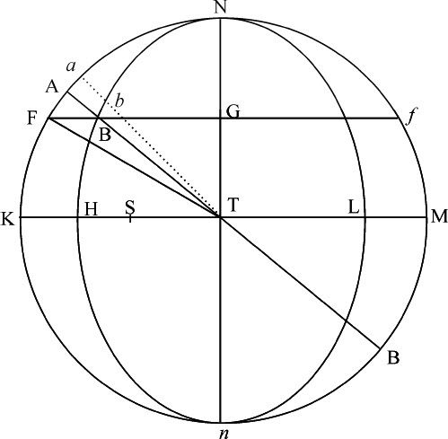
令T为地球的处所，Nn 为任意给定时刻的月球交会点连线，KTM为其上的垂线，TA为绕中心旋转的直线，其角速度等于太阳与交会点相互分离的角速度，使得介于静止直线Nn 与旋转直线TA之间的角总是等于太阳与交会点间的距离。如果把任意直线TK分为TS和SK两部分，使它们的比等于太阳的平均小时运动比交会点在方照点的平均小时运动，再取直线TH等于TS部分与整个线段TK的比例中项，则该直线正比于太阳离开交会点的平均运动。
因为以T为中心，以TK为半径作圆NKn M，并以同一个中心，以TH和TN为半轴作椭圆NHn L；在太阳离开交会点通过弧Na 的时间内，如果作直线Tba ，则扇形面积NTa 表示在相同时间内太阳与交会点的运动的和。所以，令极小弧a A为直线Tba 按上述规律在给定时间间隔内匀速转动所掠过，则极小扇形TAa 正比于在该时间内太阳与交会点向两个不同方向运动的速度的和。太阳的速度几乎是均匀的，其不等性如此之小，不会在交会点的平均运动中造成最小的不等性。这个和的另一部分，即交会点速度的平均量，在离开朔望点时按它到太阳距离正弦的平方增大（由本编命题31推论），并在到达方照点同时太阳位于K时有最大值，它与太阳速度的比等于SK比TS，即，等于（TK比TH的平方差，或）矩形KHM比TH2 。但椭圆NBH将表示这两个速度的和的扇形ATa 分为ABba 和BTb 两部分，且正比于速度。因为，延长BT到圆交于β，由点B向长轴作垂线BG，它向两边延长与圆相交于点F和f ；因为空间ABba 比扇形TBb 等于矩形ABβ比BT2 （该矩形等于TA和TB的平方差，因为直线AB在T被等分，而在B未被等分），所以当空间ABba 在K处为最大时，该比值与矩形KHM比HT2 相等。但上述交会点的最大平均速度与太阳速度的比也等于这一比值；因而在方照点扇形ATa 被分割成正比于速度的部分。又因为矩形KHM比HT2 等于FBf 比BG2 ，且矩形ABβ等于矩形FBβ，所以在K处也是最大的小面积ABba 比余下的扇形TBb 等于矩形ABβ比BG2 。但这些面积的比总是等于矩形ABβ比BT2 ；所以位于处所A的小面积ABba 按BG与BT的平方比值小于它在方照点的对应小面积，即，按太阳到交会点距离的正弦的平方比值减小。所以，所有小面积ABba 的和，即空间ABN，正比于在太阳离开交会点后掠过弧NA的时间内交会点的运动；而余下的空间，即椭圆扇形NTB，则正比于同一时间里的太阳平均运动。而因为交会点的平均年运动是在太阳完成其一个周期的时间内完成的，交会点离开太阳的平均运动比太阳本身的平均运动等于圆面积比椭圆面积；即，等于直线TK比直线TH，后者是TK与TS的比例中项；或者，等价地，等于比例中项TH比直线TS。
命题2
已知月球交会点的平均运动，求其真实运动。
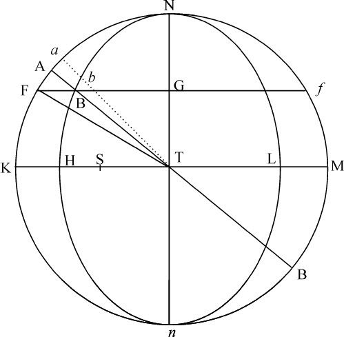
令角A为太阳到交会点平均位置的距离，或太阳离开交会点的平均运动。如果取角B，其正切比角A的正切等于TH比TK，即等于太阳的平均小时运动与太阳离开交会点的平均小时运动的比的平方根，则当交会点位方照点时，角B为太阳到交会点的真实距离。因为连接FT，由前一命题的证明，角FTN为太阳到交会点平均位置的距离，而角ATN为太阳到交会点真实位置的距离，这二个角的正切的比等于TK比TH。
推论．因此，角FTA为月球交会点的均差；该角的正弦，其在八分点的最大值比半径等于KH比TK＋TH。但在其他任意处所A该均差的正弦比最大正弦等于角FTN＋ATN的和的正弦比半径；即，近似等于太阳到交会点平均位置的二倍距离（即2FTN）的正弦比半径。
附注
如果交会点在方照点的平均小时运动为
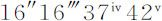
，即在一个回归年中为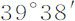
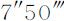
，则TH比TK等于数9.0827646与数10.0827646的比的平方根，即等于18.6524761比19.6524761。所以，TH比HK等于18.6524761比1；即，等于太阳在一个回归年中的运动比交会点的平均运动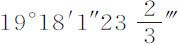
。但如果月球交会点在20个儒略年中的平均运动为386°50′16″，如由观测运用月球理论所推算的那样，则交会点在一个回归年中的平均运动为
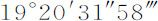
，TH比HK等于360°比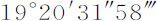
；即，等于18.61214比1，由此交会点在方照点的平均小时运动为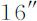
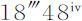
。交会点在八分点的最大均差为1°29′57″。”命题34 问题15
求月球轨道相对于黄道平面的倾斜的每小时变差。
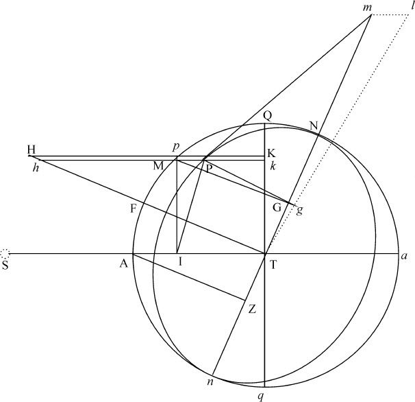
令A和a 表示朔望点；Q和q 为方照点；N和n 为交会点；P为月球在其轨道上的位置；p 为该位置在黄道面上的投影；m TL与上述相同，为交会点的即时运动，如果在Tm 上作垂线PG，连接p G并延长与Tl 相交于g ，再连接Pg ，则角PGg 为月球在P时月球轨道相对于黄道面的倾角；角Pgp 为经过一个短时间间隔后的同一个倾角；所以角GDg 就是倾角的即时变差。但这个角GPg 比角GTg 等于TG比PG乘以Pp 比PG。所以，如果设时间间隔为一小时，则由于角GTg （由命题30）比角
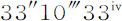
等于IT·PG·AZ比AT3 ，角GPg （或倾角的小时变差）比角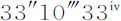
等于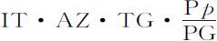
比AT3 。完毕。
在此假定月球沿圆形轨道匀速运动。但如果轨道是椭圆的，交会点的平均运动将按短轴与长轴的比而减小，如前面所证明的那样；而倾角的变差也将按相同比例减小。
推论Ⅰ．在Nn 上作垂线TF，令p M为月球在黄道面上的小时运动；在QT上作垂线p K，Mk ，并延长与TF相交于H和h ；则IT比AT等于Kk 比Mp ；而TG比Hp 等于TZ比AT；所以，IT·TG等于
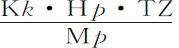
，即，等于面积Hp Mh 乘以比值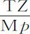
：所以倾角的小时变差比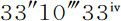
等于面积Hp Mh 乘以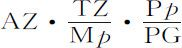
比AT3 。推论Ⅱ．如果地球和交会点每经过一小时都被从新处所拉回并立即回到其原先的处所，使得其位置在一整个周期月内都是已知的，则在这个月里倾角的总变差比
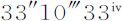
等于在点p 转运一周的时间内（考虑到要计入它们的符号＋或－）产生的所有的面积Hp Mh 的和，乘以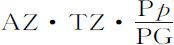
比Mp· AT3 ，即，等于整个圆QAqa 乘以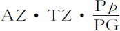
比2Mp· AT2 。推论Ⅲ．在交会点的给定位置上，平均小时变差（如果它均匀保持一整个月，即可以产生月变差）比
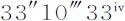
等于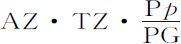
比2AT2 ，或等于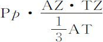
比PG·4AT；即（因为Pp 比PG等于上述倾角的正弦比半径，而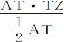
比4AT等于二倍角ATn 比四倍半径），等于同一个倾角的正弦乘以交会点到太阳的二倍距离的正弦比四倍的半径平方。推论Ⅳ．当交会点在方照点时，由于倾角的小时变差（由本命题）比角
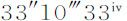
等于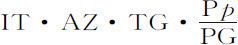
比AT3 ，即，等于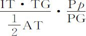
比2AT，即，等于月球到方照点二倍距离的正弦乘以 比二倍半径，而在交会点的这一位置上，在月球由方照点移动到朔望点的时间内（即在走完此段距离所需的
比二倍半径，而在交会点的这一位置上，在月球由方照点移动到朔望点的时间内（即在走完此段距离所需的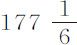
小时内），所有小时变差的和比同样多的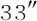
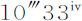
角的和，或比5878″，等于月球到方照点所有二倍距离的正弦的和乘以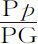
，比同样多的直径的和；即，等于直径乘以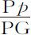
比周长；即，如果倾角为5°1′，则等于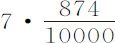
比22，或等于278比10,000。所以，在上述时间内，由所有小时变差组成的总变差为163″，或2′43″。命题35 问题16
求在给定时刻月球轨道相对于黄道平面的倾角。
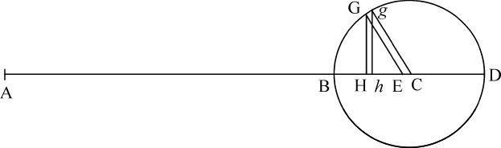
令AD为最大倾角的正弦，AB为最小倾角的正弦。在C二等分BD；以C为中心，BC为半径作圆BGD。在AC上取CE比EB等于EB比二倍BA。如果在给定时刻取角AEG等于交会点到方照点的二倍距离，并在AD上作垂线GH，则AH即为所求的倾角的正弦。
因为GE2 等于
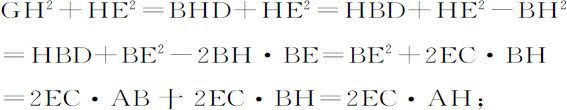
所以，由于2EC是已知的，GE2 正比于AH。现在令AEg 表示在任意时间间隔之后交会点到方照点的二倍距离，则由于角GEg 是已知的，弧Gg 正比于距离GE。但Hh 比Gg 等于GH比GC，所以，Hh 正比于矩形GH·Gg ，或正比于GH·GE，即正比于
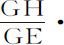
GE2 ，或正比于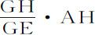
；即正比于AH与角AEG的正弦的乘积。所以，如果在任意一种情况下，AH为倾角的正弦，则它与倾角的正弦以相同的增量增大（由前一命题推论Ⅲ），因而总是与该正弦相等。而当点G落在点B或D上时，AH等于这一正弦，所以它总是与之相等。在本证明中，我没表示交会点到方照点二倍距离的角BEG均匀增大；因为我无法详细地考查每一分钟的不等性。现在设BEG是直角，在此情形中，Gg 为交会点到太阳二倍距离的小时增量；则（由前一命题推论Ⅲ）在同一情形中倾角的小时变差比
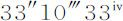
等于倾角的正弦AH乘以交会点到太阳的二倍距离直角BEG的正弦比半径的平方；即，等于平均倾角的正弦AH比四倍半径；即，由于平均倾角约为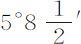
，等于其正弦896比四倍半径40,000，或等于224比10,000。但对应于BD的总变差，即两个正弦的差，比该小时变差等于直径BD比弧Gg ，即等于直径BD比半圆周长BGD，乘以交会点由方照点移动到朔望点的时间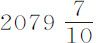
小时，比一小时，即等于7比11乘以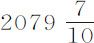
比1。所以把所有这些比式复合，得到总变差BD比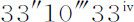
等于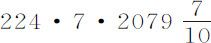
比110,000，即等于29,645比1000；由此得出变差BD为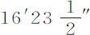
。这就是不考虑月球在其轨道上位置时的倾角的最大变差；因为，如果交会点在朔望点，倾角不因月球位置的变化而受影响。但如果交会点位于方照点，则月球在朔望点时的倾角比它在方照点时小2′43″，如我们以前所证明的那样（前一命题推论Ⅳ）；而当月球在方照点时，由总平均变差中减去上述差值的一半
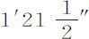
，即余下15′2″；而月球在朔望点时加上相同值，即变为17′45″。所以，如果月球位于朔望点，交会点由方照点移动到朔望点的总变差为17′45″；而且，如果轨道倾角为5°17′20″时交会点位于朔望点，则当交会点位于方照点而月球位于朔望点时，倾角为4°59′35″。所有这些都得到了观测的证实。当月球位于朔望点，而交会点位于它们与方照点之间时，如果要求轨道的倾角，可令AB比AD等于4°59′35″的正弦比5°17′20″的正弦，取角AEG等于交会点到方照点的二倍距离；则AH就是所要求的倾角的正弦。当月球到交会点的距离为90°时，这一轨道倾角与这一轨道倾角的正弦是相等的。在月球的其他位置上，由于倾角的变差而引起的这种月份不等性，在计算月球黄纬时得到平衡，并可以通过交会点运动的月份不等性（像以前所说的那样）予以消除，因而在计算黄纬时可以忽略不计。
附注
通过对月球运动的上述计算，我希望能证明运用引力理论可以由其物理原因推算出月球的运动。运用同一个理论我进一步发现，根据第一编命题66推论Ⅳ，月球平均运动的年均差是由于月球轨道受到变化着的太阳作用的影响所致。这种作用力在太阳的近地点较大，它使月球轨道发生扩散；而在太阳的远地点较小，这时轨道复得以收缩。月球在扩散的轨道上运动较慢，而在收缩的轨道上运动较快；调节这种不等性的年均差，在太阳的远地点和近地点都为零。在太阳到地球的平均距离上，它达到约11′50″；在其他正比于太阳中心均差的距离上，在地球由远日点移向近日点时，它叠加在月球的平均运动上，而当地球在另外半圆上运行时，它应从其中减去。取大轨道半径为1000，地球偏心率为
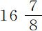
，则该均差，当它取最大值时，按引力理论计算，为11′49″。但地球的偏心率似乎应再大些，均差也应以与偏心率相同的比例增大。如果设偏心率为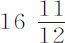
，则最大均差为11′51″。我还发现，在地球的近日点，由于太阳的作用力较大，月球的远地点和交会点的运动比地球在远日点时要快，它反比于地球到太阳距离的立方；由此产生出这些正比于太阳中心均差的运动年均差。现在，太阳运动反比于地球到太阳距离的平方而变化；这种不等性所产生的最大中心均差为1°56′20″，它对应于上述太阳的偏心率
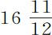
。但如果太阳运动反比于距离的平方，则这种不等性所产生的最大均差为2°54′30″；所以，由月球远地点和交会点的运动不等性所产生的最大均差比2°54′30″等于月球远地点的平均日运动和它的交会点的平均日运动，比太阳的平均日运动。因此，其远地点平均运动的最大均差为19′43″，交会点平均运动的最大均差为9′24″。当地球由其近日点移向远日点时，前一项均差是增大的，后一项是减小的；而当地球位于另外半个圆上时，则情况相反。通过引力理论我还发现，当月球轨道的横向直径穿过太阳时，太阳对月球的作用略大于该直径垂直于地球与太阳的连线之时；因而月球的轨道在前一种情形中大于后一种情形。由此产生出月球平均运动的另一种均差，它决定于月球远地点相对于太阳的位置，当月球远地点位于太阳的八分点时最大，而当远地点到达方照点或朔望点时为零；当月球远地点由太阳的方照点移向朔望点时，该均差叠加在平均运动上，而当远地点由朔望点移向方照点时，则应从中减去。我将称这种均差为半年均差，当远地点位于八分点时为最大，就我根据现象的推算，约达3′45″：这正是它在太阳到地球的平均距离上的量值。但它反比于太阳距离的立方而增大或减小，所以当距离为最大时约3′34″，距离最小时约3′56″。而当月球远地点不在八分点时，它即变小，与其最大值的比等于月球远地点到最近的朔望点或方照点的二倍距离的正弦比半径。
按同样的引力理论，当月球交会点连线通过太阳时，太阳对月球的作用略大于该连线垂直于太阳与地球的连线时；由此又产生出一种月球平均运动的均差，我称之为第二半年均差；它在交会点位于太阳的八分点时为最大，在交会点位于朔望点或方照点时为零；在交会点的其他位置上，它正比于两个交会点之一到最近的朔望点或方照点的二倍距离正弦。如果太阳位于距它最近的交会点之后，它叠加在月球的平均运动上，而位于其前时则应从中减去；我由引力理论推算出，在有最大值的八分点，在太阳到地球的平均距离上，它达到47″。在太阳的其他距离上，交会点位于八分点的最大均差反比于太阳到地球的距离的立方；所以在太阳的近地点它达到约49″，而在远地点约为45″。
由同样的引力理论，月球的远地点位于与太阳的会合处或相对处时，以最大速度顺行；而在与太阳成方照位置时为逆行；在前一种情形中，偏心率获得最大量，而在后一种情形有最小值，这可以由第一编命题66推论Ⅶ，Ⅷ和Ⅸ证明。这些不等性，由这几个推论可知，是非常大的，并产生出我称之为远地点半年均差的原理；就我根据现象所作的近似推算，这种半年均差的最大值可达约12°18′。我们的同胞霍罗克斯 (1) 最先提出月球沿椭圆运动，地球位于其下焦点的理论。哈雷博士作了改进，把椭圆中心置于一个中心绕地球均匀转动的本轮之上；该本轮的运动产生了上述远地点的顺行和逆行，以及偏心率的不等性。设月球到地球的平均距离分为100,000等份，令T表示地球，TC为占5505等份的月球平均偏心率。延长TC到B，使得最大半年均差12°18′的正弦比半径TC正比于CB；以C为中心，CB为半径，作圆BDA，它即是所说的本轮，月球轨道的中心位于其上，并按字母BDA的顺序转动。取角BCD等于二倍年角差（argument ），或等于太阳真实位置到月球远地点一次校正的真实位置的二倍距离，则CTD为月球远地点的半年均差，TD为其轨道偏心率，它所指向的远地点位置现已得到二次校正。但由于月球的平均运动，其远地点的位置和偏心率，以及轨道长轴为200,000均为已知，由这些数据，通过人所共知的方法即可求出月球在其轨道上的实际位置以及它到地球的距离。
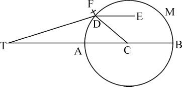
在地球位于近日点时，太阳力最大，月球轨道中心运动比在远日点时快，它反比于太阳到地球距离的立方。但是，因为太阳中心的均差是包含在年角差中的，月球轨道中心在本轮BDA上运动较快，反比于太阳到地球距离的平方。所以，如果设它反比于到轨道中D的距离，则运动更快，作直线DE指向经一次校正的月球远地点，即，平行于TC；取角EDF等于上述年角差减去月球远地点到太阳的顺行近地点距离的差；或者，等价地，取角CDF等于太阳实际近点角（anomaly ）在360°中的余角；令DF比DC等于大轨道偏心率的二倍高度比太阳到地球的平均距离，与太阳到月球远地点的平均日运动比太阳到其自己的近地点的平均日运动的乘积，即，等于 比1000乘以 比 ，或等于3比100；设月球轨道的中心位于F，绕以D为中心以DF为半径的本轮转动，同时点D沿圆DABD运动：因为用这样的方法，月球轨道的中心即绕中心（掠过某种曲线），其速度近似于正比于太阳到地球距离的立方，一如它所应当的那样。
计算这种运动很困难，但用以下近似方法可变得容易些。像前面一样，设月球到地球的平均距离为100,000个等份，偏心率TC为5505个等份，则CB或CD为 ，而DF为 等份，该线段在距离TC处对着地球上的张角，是由轨道中心自D向F运动时所产生的；将该线段DF沿平行方向延长一倍，在由月球轨道上焦点到地球的距离上相对于地球的张角与DF的张角相同，该张角是由上焦点的运动产生的；但在月球到地球的距离，这一二倍线段2DF在上焦点处，在与第一个线段DF相平行的位置，相对于月球的张角，它是由月球的运动所产生的，因而可称之为月球中心的第二均差；在月球到地球的平均距离上，该均差近似正比于由直线DF与点F到月球连线所成夹角的正弦，其最大值为2′55″。但由直线DF与点F到月球连线所成的夹角，既可以由月球的平均近点角减去角EDF求得，也可以在月球远地点到太阳远地点的距离上叠加月球到太阳的距离求得；而且半径比这个角的正弦等于2′25″比第二中心均差：如果上述和小于半圆，则应加上；而如果大于半圆，则应减去。由这一经过校正的月球在其轨道上的位置，可以求出日月球在其朔望点的黄纬。
地球大气高达35或40英里，它折射了太阳光线。这种折射使光线散射并进入地球的阴影；这种在阴影边缘附近的弥散光展宽了阴影。因此，我在月食时，在这一由视差求出的阴影上增加了1或 分。
不过，月球理论应得到现象的检验和证实，首先是在朔望点，其次是在方照点，最后是在八分点；愿意在格林尼治（Greenwich）皇家天文台做这项工作的人，无论是谁，都会发现，在旧历1700年12月的最后一天下午假设太阳和月球的下述平均运动是绝无错误的：太阳的平均运动为 ，其远地点为 ；月球的平均运动为 ，其远地点为 ；其上升交会点为 ；而格林尼治天文台与巴黎皇家天文台之间的子午线差为零时9分20秒：但月球及其远地点的平均运动尚无法足够精确地获得。
命题36 问题17
求太阳使海洋运动的力。
太阳干扰月球运动的力ML或PT（由命题25），在月球方照点，比地表重力，等于1比638092.6；而在月球朔望点，力TM—LM或2PK是该量值的二倍。但在地表以下，这些力正比于到地心距离而减小，即正比于 比1；因而前一个力在地表上比重力等于1比38,604,600；这个力使与太阳相距90度处的海洋受到压迫。但另一个力比它大一倍，使不仅正对着太阳，而且正背着太阳处的海洋都被托起；这两力的和比重力等于1比12,868,200。因为相同的力激起相同的运动，无论它是在距太阳90度处压迫海水，或是在正对着或正背着太阳处托起海水，上述力的和就是太阳干扰海洋的总力，它所起的作用与全部用以在正对着或正背着太阳处托起海洋，而在距太阳90度处对海洋完全不发生作用，是一样的。
这正是太阳干扰任意给定处所的海洋的力。与此同时太阳位于该处的顶点，并处于到地球的平均距离上。在太阳的其他位置上，该托起海洋的力正比于太阳在当地地平线上二倍高度的正矢，反比于到地球距离的立方。
推论．由于地球各处的离心力是由于地球周日自转引起的，它比重力等于1比289，它在赤道处托起的水面比在极地处高85,427巴黎尺，这已经在命题19中证明过，因而太阳的力，它比重力等于1比12,868,200，比该离心力等于289比12,868,200，或等于1比44,527，它在正对着和正背着太阳处所能托起的海水高度，比距太阳90度处的海面仅高出1巴黎尺又 寸；因为该尺度比85,472尺等于1比44,527。
命题37 问题18
求月球使海洋运动的力。
月球使海洋运动的力可以由它与太阳力的比求出，该比值可以由受动于这些力的海洋运动求出。在布里斯托（Bristol）下游3英里的阿文（Avon）河口处，春秋天日月朔望时水面上涨的高度（根据萨缪尔·斯多尔米的观测）达45英尺，但在方照时仅为25英尺。前一个高度是由这些力的和造成的，后一高度则由其差造成。所以，如果以S和L分别表示太阳和月球位于赤道且处于到地球平均距离处的力，则有L＋S比L－S等于45比25，或等于9比5。
在普利茅斯（Plymouth）（根据萨缪尔·科里普莱斯的观测）潮水的平均高度约为16英尺，春秋季朔望时比方照时高7或8英尺。设最大高差为9英尺，则L＋S比L－S等于 比 ，或等于41比23；这一比例与前一比例吻合极好。但因为布里斯托的潮水很大，我们宁可以斯多尔米的观测为依据；所以，在获得更可靠的观测之前，还是使用9比5的比值。
因为水的往复运动，最大潮并不发生于日月朔望之时，而是像我们以前所说过的那样，发生于朔望后的第三小时；或（自朔望起算）紧接着月球在朔望后越过当地子午线第三小时；或宁可说是（如斯多尔米的观测）新月或满月那天后的第三小时，或更准确地说，是新月或满月后的第十二小时，因而落潮发生在新月或满月后的第四十三小时。不过在这些港口它们约发生在月球到达当地子午线后的第七小时；因而紧接着月球到达子午线，在月球距太阳或其方照点超前18或19度时。所以，夏季和冬季中高潮并不发生在二至时刻，而发生于移出至点其整个行程的约十分之一时，即约36或37度时。由类似方法，最大潮发生于月球到达当地子午线之后，月球超过太阳或其方照点约自一个最大潮到紧接其后的另一个最大潮之间总行程的1/10之时。设该距离为约 度；在该月球到朔望点或方照点的距离上，太阳力使受月球运动影响而产生的海洋运动的增加或减少，比在朔望点或方照点时要小，其比例等于半径比该距离二倍的余弦，或比37度角的余弦；即比例为10,000,000比7,986,355；所以，在前面的比式中，S的处所必须由0.7986355S来代替。
还有，月球在方照点时，由于它倾斜于赤道，它的力必定减小；因为月球在这些方照点上，或不如说在方照点后 度上，相对于赤道的倾角为23°13′；太阳与月球驱动海洋的力都随其相对于赤道的倾斜而约正比于倾角余弦的平方减小；因而在这些方照点上月球的力仅为0.8570327L；因此我们得到L＋0.7986355S比0.8570327L－0.7986355S等于9比5。
此外，月球运动所沿的轨道直径，不考虑其偏心率，相互比为69比70；因而月球在朔望点到地球的距离，比其在方照点到地球的距离，在其他条件不变的情况下，等于69比70；而它越过朔望点 度，激起最大海潮时到地球的距离，以及它越过方照点 度，激起最小海潮时到地球的距离，比平均距离，等于69.098747和69.897345比 。但月球驱动海洋的力反比于其距离的立方变化；因而在这些最大和最小距离上，它的力比它在平均距离上的力，等于0.9830427和1.017522比1。由此我们又得到1.017522L·0.7986355S比0.9830427·0.8570327L－0.7986355S等于9比5；S比L等于1比4.4815。所以，由于太阳力比重力等于1比12,868,200，月球力比重力等于1比2,871,400。
推论Ⅰ．由于海水受太阳力的吸引能升高1英尺又 英寸，月球力可使它升高8英尺又 英寸；这两个力合起来可以使水升高 英尺；当月球位于近地点时可高达 英尺，尤其是当风向与海潮方向相同时更是如此。这样大的力足以产生所有的海洋运动，并与这些运动的比例相吻合；因为在那些由东向西自由而开阔的海洋中，如太平洋，以及位于回归线以外的大西洋和埃塞俄比亚海上，海水一般都可以升高6，9，12或15英尺；但据说在极为幽深而辽阔的太平洋上，海潮比大西洋和埃塞俄比亚海的要大；因为要使海潮完全隆起，海洋自东向西的宽度至少需要90度。在埃塞俄比亚海上，回归线以内的水面隆起高度小于温带：因为在非洲和南美洲之间的洋面宽度较窄。在开阔海面的中心，当其东西两岸的水面未同时下落时不会隆起，尽管如此，在我们较窄的海域里，它们还是应交替起伏于沿岸；因此在距大陆很远的海岛上一般只有很小的潮水涨落。相反，在某些港口，海水轮流地灌入和流出海湾，波涛汹涌地奔突往返于浅滩之上，涨潮与落潮必定比一般情形大；如在英格兰的普利茅斯和切斯托·布里奇（Chepstow Bridge），诺曼底的圣米歇尔山和阿弗朗什镇（mountainsof St. Michael，and the town of Avranches，in Normandy），以及东印度的坎贝 (2) 和勃固 (3) （Cambaia and Pegu in the East Indies）。在这些地方潮水如此汹涌，有时淹没海岸，有时又退离海岸数英里远。海潮的涨落受潮流和回流的作用总要使水面升高或下落30，40或50英尺以上才停止。同样的道理可说明狭长的浅滩或海峡的情况，如麦哲伦海峡（Magellanic straits）和英格兰附近的浅滩。在这些港口和海峡中，由于潮流和回流极为汹涌使海潮得到极大增强。但面向幽深而辽阔海洋的陡峭沿岸，海潮不受潮流和回流的冲突影响而可以自由涨落，潮位比关系与太阳和月球力相吻合。
推论Ⅱ．由于月球驱动海洋的力比重力等于1比2,871,400，很显然这种力在静力学或流体静力学实验，甚至在摆实验中都是微不足道的。仅仅在海潮中这种力才表现出明显的效应。
推论Ⅲ．因为月球使海洋运动的力比太阳的类似的力为4.4815比1，而这些力（由第一编命题66推论ⅩⅣ）又正比于太阳和月球的密度与它们的视在直径立方的乘积，所以月球密比太阳密度等于4.4815比1，而反比于月球直径的立方比太阳直径的立方；即（由于月球与太阳平均视在直径为 和32′12″）等于4891比1000。但太阳密度比地球密度等于1000比4000；因而月球密度比地球密度等于4891比4000，或等于11比9。所以，月球比重大于地球比重，而且上面陆地较多。
推论Ⅳ．由于月球的实际直径（根据天文学家的观测）比地球的实际直径等于100比365，月球物质的质量比地球物质的质量等于1比39.788。
推论Ⅴ．月球表面的加速引力约比地球表面的加速引力小三倍。
推论Ⅵ．月球中心到地球中心的距离比月球中心到地球与月球的公共重心的距离为40.788比39.788。
推论Ⅶ．月球中心到地球中心的平均距离约为（在月球的八分点） 个地球最大半径；因为地球的最大半径为19,658,600巴黎尺，而地球与月球中心的平均距离，为 个这种半径，等于1,187,379,440巴黎尺。这一距离（由前一推论）比月球中心到地球与月球公共重心的距离为40.788比39.788；因而后一距离为1,158,268,534英尺。又由于月球相对于恒星的环绕周期为27天7小时 分，月球在一分钟时间内掠过的角度的正矢为12,752,341比半径1,000,000,000,000,000；而该半径比该正矢等于1,158,268,534尺比14.7706353尺。所以，月球在使之停留在其轨道上的力作用下落向地球时，一分钟时间内可掠过14.7706353尺；如果把这个力按 比 的比例增大，则可由命题3的推论求得在月球轨道上的总引力；月球在这个力的作用下，一分钟时间内可下落14.8538067尺。在月球到地球距离的1/60处，即在距离地球中心197,896,573尺处，物体因其重量而在一秒钟时间内可下落14.8538067尺。所以，在19,615,800尺的距离处，即在一个平均地球半径处，重物体在相同时间内可下落15.11175尺，或15尺，1寸，又 分。这是在45度纬度处物体下落的情形。由以前在命题20中列出的表，在巴黎纬度上下落距离约略长 分。所以，通过这些计算，重物体在巴黎纬度上的真空中一秒钟内可下落距离极接近于15巴黎尺，1寸， 分。如果从引力中减去由于地球自转而在该纬度上产生的离心力从而使之减小，则重物体一秒内可下落15尺1寸又 分。这正是我们以前在命题14和19中得到的重物体在巴黎纬度上实际下落速度。
推论Ⅷ．在月球的朔望点，地球与月球中心的平均距离等于60个地球最大半径，再减去约1/30个半径；而在月球的方照点，相同的中心距离为 个地球半径；因为由命题28，这两个距离比月球在八分点的平均距离等于69和70比 。
推论Ⅸ．在月球的朔望点，地球与月球中心的平均距离是60个平均地球半径又 半径；而在月球的方照点，相同的平均中心距离为61个平均地球半径减去 个半径。
推论Ⅹ．在月球的朔望点，其平均地平视差在0，30，38，45，52，60，90度的纬度上分别为57′20″，57′16″，57′14″，57′12″，57′10″，57′8″，57′4″。
在上述计算中，我未考虑地球的磁力吸引，因为其量值极小而且未知：如果一旦能把它们求出来，则对于子午线的度数，不同纬度上等时摆的长度，海洋的运动规律，以及太阳和月球的视在直径求月球视差，都可以通过现象更准确地测定，我们也就有可能使这些计算更加精确。
命题38 问题19
求月球形状。
如果月球是与我们的海水一样的流体，则地球托起其最近点与最远点的力比月球使地球上正对着与正背着月球的海面被托起的力，等于月球指向地球的加速引力比地球指向月球的加速引力，再乘以月球直径比地球直径。即等于39.788比1乘以100比365，或等于1081比100。所以，由于我们的海洋被托起 尺，月球流体即应被地球力托起93尺；因此月球形状应是椭球，其最大直径的延长线应通过地球中心，并比与它垂直的直径长186尺。所以，月球的这一形状，必定是从一开始就具备了的。
推论．因此，这正是月球指向地球的一面总是呈现出相同形状的原因；月球球体上其他任何位置上的部分都不能是静止的，而是永远处于恢复到这一形状的运动之中；但是，这种恢复运动，必定进行得极慢，因为激起这种运动的力极弱；这使得永远指向地球的一面，根据命题17中的理由，在被转向月球轨道的另一个焦点时，不能被立即拉回来而转向地球。
引理1
如果APEp 表示密度均匀的地球，其中心为C，两极为P，p ，赤道为AE；如果以C为中心，CP为半径，作球体Pape ，并以QR表示一个平面，它与由太阳中心到地球中心的连线成直角；再设位于该球外侧的地球边缘部分Pap APep E的各粒子，都倾向于离开平面QR的一侧或另一侧，离开的力正比于粒子到该平面的距离；则首先，位于赤道AE上，以及均匀分布于地球之外并以圆环形式环绕着地球的所有粒子的合力和作用，促使地球绕其中心转动，比赤道上距平面QR最远的点A处同样多的粒子的合力和作用，促使地球绕其中心作类似的转动，等于1比2。该圆运动是以赤道与平面QR的公共交线为轴而进行的。
因为，以K为中心，IL为直径，作半圆INL。设半圆周INL被分割为无数相等部分，由各部分N向直径IL作正弦NM。则所有正弦NM的平方的和等于正弦KM的平方的和，而这两个和加在一起等于同样多个半径KN的平方的和；所以所有正弦NM的平方和仅为同样多个半径KN的平方和的一半。
现在设圆周AE被分割为同样多个小的相等部分，从每一个这样部分F向平面QR作垂线FG，也从点A作垂线AH，则使粒子F离开平面QR的力（由题设）正比于垂线FG；而这个力乘以距离CG则表示粒子F推动地球绕其中心转动的能力。所以，一个粒子位于F的这种能力比位于A的能力等于FG·GC比AH·HC；即，等于FC2 比AC2 ：因而所有粒子F在其适当处所F的总能力，比位于A的同样多的能力，等于所有的FC2 的和比所有AC2 的和，即（由以上所证明过的）等于1比2。
证毕。
因为这些粒子是沿着离开平面QR的垂线方向发生作用的，并且在平面的两侧是相等的，它们将推动赤道圆周与坚固的地球球体一同绕既在平面QR上又在赤道平面上的轴转动。
引理2
仍设相同的条件，则，其次，分布于球体各处的所有粒子推动地球绕上述轴转动的合力或能力，比以圆环形状均匀分布于赤道圆周AE上的同样多的粒子推动整个地球作类似转动的合力，等于2比5。
因为，令IK为任意平行于赤道AE的小圆，令Ll 为该圆上两个相等粒子，位于球体Pape 之外；在垂直于指向太阳的半径的平面QR上，作垂线LM，lm ，则这两个粒子离开平面QR的合力正比于垂线LM，lm 。作直线Ll 平行于平面Pape ，并在X处二等分之；再通过点X作Nn 平行于平面QR，与垂线LM，lm 相交于N和n ；再在平面QR上作垂线XY。则推动地球沿相反方向转动的粒子L和l 的相反的力正比于LM·MC和lm ·m C；即，正比于LN·MC＋NM·MC，和LN·m C－nm ·m C；或LN·MC＋NM·MC和LN·m C－NM·m C，而这二者的差LN·Mm －NM·（MC＋m C）正是二粒子推动地球转动的合力。这个差的正数部分LN·Mm ，或2LN·NX，比位于A的两个同样大小的粒子的力2AH·HC，等于LX2 比AC2 ；其负数部分，NM·（MC＋m C），或2XY·CY，比位于A的两个相同粒子的力2AH·HC，等于CX2 比AC2 。因而，这两部分的差，即两个粒子L和l推动地球转动的合力，比上述位于处所A的两个粒子推动地球作类似转动的力，等于LX2 －CX2 比AC2 。但如果设圆IK的周边IK被分割为无数个相等的小部分L，则所有的LX2 比同样多的IX2 等于1比2（由引理1）；而比同样多的AC2 则等于IX2 比2AC2 ；而同样多的CX2 比同样多的AC2 等于2CX2 比2AC2 。所以，在圆IK周边上所有粒子的合力比在A处同样多粒子的合力等于IX2 －2CX2 比2AC2 ；所以（由引理1）比圆AE周边上同样多粒子的合力等于IX2 －2CX比AC2 。
现在，如果设球直径Pp 被分割为无数个相等部分，在其上对应有同样多个圆IK，则每个圆周IK上的物质正比于IX2 ；因而这些物质推动地球的力正比于IX2 乘以IX2 －2CX2 ；因而同样多物质的力，如果它位于圆周AE上，则正比于IX2 乘以AC2 。所以，分布于球外所有圆环上所有物质粒子的总力，比位于最大圆周AE上同样多粒子的总力，等于所有的IX2 乘以IX2 －2CX2 比同样多的IX2 乘以AC2 ，即，等于所有的AC2 －CX2 乘以AC2 －3CX2 比同样多的AC2 －CX2 乘以AC2 ；即等于所有的AC4 －4AC2 ·CX2 ＋3CX4 比同样多的AC4 －AC2 ·CX2 ；即，等于流数 (4) 为AC4 －4AC2 ·CX2 ＋3CX4 的总流积量，比流数为AC4 －AC2 ·CX2 的总流积量；所以，运用流数方法知，等于AC4 ·CX2 比 ；即，如果以总的Cp 或AC代替CX，则等于 比 ；即等于2比5。
证毕
引理3
仍设相同条件，则，第三，由所有粒子的运动而产生的整个地球绕上述轴的转动，比上述圆环绕相同轴转动的运动，等于地球的物质比环的物质，再乘以四分之圆周弧的平方的三倍比该圆直径平方的二倍，即等于物质与物质的比，乘以数925,275比数1,000,000。
因为，柱体绕其静止轴的转动比与它一同旋转的内切球体的运动，等于四个相等的平方比这些平方中三个的内切圆，而该柱体的运动比环绕着球与柱体的公共切线的极薄的圆环的运动，等于二倍柱体物质比三倍环物质；而均匀连续围绕着柱体的环的运动，比同一个环绕其自身直径作周期相等的均匀转动运动，等于圆的周长比其二倍直径。
假设Ⅱ
如果地球的其他部分都被除去，仅留下上述圆环单独在地球轨道上绕太阳作年度环绕，同时它还绕其自身的轴作日自转运动，该轴与黄道平面倾角为 度，则不论该环是流体的，或是由坚硬而牢固物质所组成的，其二分点的运动都保持不变。
命题39 问题20
求二分点的岁差。
当交会点位于方照点时，月球交会点在圆轨道上的中间（middle ）小时运动为 ；其一半 （出于前面解释过的理由）为交会点在这种轨道上的平均小时运动，这种运动在一个回归年中为20°11′46″。所以，由于月球交会点在这种轨道上每年后移20°11′46″，则如果有多个月球，每个月球的交会点的运动（由第一编命题66推论ⅩⅥ）将正比于其周期时间，如果一个月球在一个恒星日内沿地球表面环绕一周，则该月球交会点的年运动比20°11′46″等于一个恒星日23小时56分，比月球周期27天7小时43分，即，等于1436比39,343。围绕着地球的月球环交会点也是如此，不论这些月球是否相互接触，是否为流体而形成连续环，是否为坚硬不可流动的固体环。
那么，让我们令这些环的物质量等于地球整个外缘Pap APep E，它们都在球体Pape 以外（见引理2插图）；图为该球体比地球外缘部分等于ac2 比AC2 －a C2 ，即（由于地球的最小半径PC或a C比地球的最大半径AC等于229比230），等于52,441比495；如果该环沿赤道环绕地球，并一同环绕直径转动，则环运动（由引理3）比其内的球运动等于459比52,441再乘以1,000,000比925,275，即，等于4590比485,223；因而环运动比环与球体运动的和等于4590比489,813。所以，如果环是固着在球体上的，并把它的运动传递给球体，使其交会点或二分点后移，则环所余下的运动比前一运动等于4590比489,813；由此，二分点的运动将按相同比例减慢。所以，由环与球体所组成的物体的二分点的年运动，比运动20°11′46″等于1436比39,343再乘以4590比489,813，即，等于100比292,369。但使许多月球的交会点（由于上述理由），因而使环的二分点后移的力（即，在命题30插图中的力3IT），在各粒子中都正比于这些粒子到平面QR的距离；这些力使粒子远离该平面：因而（由引理2），如果环物质扩散到整个球的表面，形成Pap APep E的形状，构成地球外缘部分，则所有粒子推动地球绕赤道的任意直径，进而推动二分点运动的合力或能力，将按2比5比以前减小。所以，现在二分点的年度逆行比20°11′46″等于10比73,092；即，应为 。
但因为赤道平面与黄道平面是斜交的，这一运动还应按正弦91,706（即 度的余弦）比半径100,000的比值减小；余下的运动为 ，这就是由太阳力产生的二分点年度岁差。
但月球驱动海洋的力比太阳驱动海洋的力约为4.4815比1；月球驱动二分点的力比太阳力也为相同比例。因此，月球力使二分点产生的年度岁差为 ，二者的合力造成的总岁差为 ，这一运动与现象是吻合的；因为天文学观测给出的二分点岁差为约50″。
如果地球在其赤道处高于两极处 英里，则其表面附近的物质较中心处稀疏；而二分点的岁差则随高差增大而增大，又随密度增大而减小。
迄此我们已讨论了太阳、地球、月球和诸行星系统的情形，以下需要研究的是彗星。
引理4
彗星远于月球，位于行星区域。
天文学家们认为彗星位于月球以外，因为看不到它们的日视差，而其年视差表明它们落入行星区域；因为如果地球位于它们与太阳之间，则按各星座顺序沿直线路径运动的所有彗星，在其显现的后期比正常情况运行得慢或逆行；而如果地球相对于它们处在太阳的对面，则又比正常情况快；另一方面，沿各星座逆秩运动的彗星，如果地球介于它们与太阳之间，则在其显现的后期快于正常情况；而如果地球在其轨道的另一侧，则又太慢或逆行。这些现象主要是由地球相对于其运动路径的不同位置决定的，与行星的情形相同，行星运动看起来有时逆行，有时很慢，有时很快，顺行，这要由地球运动与行星运动的方向相同或相反来决定。如果地球与行星运动方向相同，但由于地球绕太阳的角运动较快，使得由地球伸向彗星的直线会聚于彗星以外部分，由在地球上看来，由于彗星运动较慢，它显现出逆行；甚至即使地球慢于彗星，在减去地球的运动之后，彗星的运动至少也显得慢了；但如果地球与彗星运动方向相反，则彗星运动将因此而明显加快；由这些视在的加速、变慢或逆行运动，可以用下述方法求出彗星的距离。令r QA，r QB，r QC为观测到彗星初次显现时的黄纬，r QF为其消失前所最后测出的黄纬。作直线ABC，其上由直线QA和QB，QB和QC所截开的部分AB，BC相互间的比等于前三次观测之间的两段时间的比。延长AC到G，使AG比AB等于第一次与最后一次观测之间的时间比第一次与第二次观测之间的时间；连接QG。如果彗星的确沿直线匀速运动，而地球或是静止不动，或是也类似地沿直线做匀速运动，则角r QG为最后观测到彗星的黄纬，因而，彗星与地球运动的不等性即产生表示黄纬差的角FQG，如果地球与彗星反向运动，则该角叠加在角r QG上，彗星的视在运动加速；但如果彗星与地球同向运动，由它应从中减去，彗星运动或是变慢，或可能变为逆行，像我们刚才解释过的那样。所以，这个角主要由地球运动而产生，可恰当地视为是彗星的视差，在此忽略不计彗星在其轨道上不相等运动所引起的增量或减量。由该视差可以这样推算出彗星距离。令S表示太阳，ac T表示大轨道，a 为第一次观测时地球的位置，C为第三次观测时地球的位置，T为最后一次观测彗星时地球的位置，Tr 为作向白羊座首星的直线。取角r TV等于角r QF，即，等于地球位于T时彗星的黄纬；连接ac 并延长到g ，使ag 比ac 等于AG比AC；则g 为最后一次观测时，如果地球沿直线ac 匀速运动所达到的位置。所以，如果作g r平行于Tr 。并使角等于角r QG，则该角rg V等于由位置g 所看到的彗星的黄纬，而角TVg 则为地球由位置g 移到位置T所产生的视差；所以位置V为彗星在黄道平面上的位置。一般而言这个位置V低于木星轨道。
由彗星路径的弯曲度也可求出相同的结果；因为这些星体几乎沿大圆运动，而且速度极大；但在它们路径的末端，当其由视差产生的视在运动部分在其总视在运动中占很大比例时，它们一般地都偏离这些大圆，这时地球在一侧，而它们偏向另一侧；因为相对于地球的运动，这些偏折必定主要是由视差所产生的；偏折量如此之大，按我的计算，彗星隐没位置尚远低于木星。由此可推知，当它们位于近地点和近日点而接近我们时，通常低于火星和内层行星的轨道。
彗头的光亮也可进一步证实彗星的接近。因为天体的光亮是受之于太阳的，在远离时正比于距离的四次幂而减弱；即由于其到太阳距离的增加而正比于平方，又由于其视在直径的减小而正比于平方。所以，如果彗星的光的量与其视在直径是给定的，则其距离就可以取彗星到一颗行星的距离正比于它们的直径反比于亮度的平方根而求出。在1682年出现的彗星，弗莱姆斯蒂德 (5) 先生使用16英尺望远镜配置千分仪，测出它的最小直径为2′00″；但位于其头部中央的彗核或星体不超过这一尺度的十分之一，因而其直径只有11″或12″；但它的头部光亮和辉光却超过1680年的彗星，与第一或第二星等的恒星差不多。设土星及其环的亮度为其四倍；因为环的亮度几乎等于其内部的星体，星体的视在直径约为21″，因而星体与环的复合亮度与一个直径30″的星体相等，由此推知该彗星的距离比土星的距离，反比于1比 ，正比于12″比30″；即等于24比30，或4比5。另外，海威尔克（Hewelcke）告诉我们，1665年4月的彗星，亮度几乎超过所有恒星，甚至比土星的光彩更加生动；因为该彗星比前一年年终时出现的另一颗彗星更亮，与第一星等的恒星差不多。其头部直径约6′，但通过望远镜观测发现，其彗核仅与行星差不多，比木星还小；较之土星环内的星体，它有时略小，有时与之相等。所以，由于彗星头部直径很少超过8′或12′，而其彗核部分的直径仅为头部的十分之一或十五分之一，这似乎表明彗星的视在尺度一般与行星相当。但由于它们的亮度常常与土星相近，而且，有时还超过它，很明显所有的彗星在其近日点时或是低于土星，或在其上不远处；有人认为它们差不多与恒星一样远，实在荒谬之至；因为如果真是如此，则彗星得自太阳的光亮绝不可能超过行星得自恒星的光亮。
迄此为止我们尚未考虑彗星由于其头部为大量浓密的烟尘所包围而显得昏暗，彗头在其中就像在云雾中一样总是暗淡无光。然而，物体越是为这种烟尘所笼罩，它必定越能接近太阳，这使得它所反射的光的量与行星不相上下。因此彗星很可能落到远低于土星轨道的地方，像我们通过其视差所证明的那样。但最重要的是，这一结论可以由彗尾加以证明，彗尾必定或是由彗星产生的烟尘在以太中扩散而反射阳光形成的，或是由其头部的光所形成的。如果是第一种情形，我们必须缩短彗星的距离，否则只能承认彗头产生的烟尘能以不可思议的速度在巨大的空间中传播和扩散；如果是后一情形，彗头和彗尾的光只能来自彗核。但是，如果设想所有这些光都集聚在其核部之内，则核部本身的亮度必远大于木星，尤其是当它喷射出巨大而明亮的尾部时。所以，如果它能以比木星小的视在直径反射出比木星多的光，则它必定受到多得多的阳光照射，因而距太阳极近；这一理由将使彗头在某些时候进入金星的轨道之内，即，在这时，彗星淹没在太阳的光辉之中，像它们有时所表现的那样，喷射出像火焰一样的巨大而明亮的彗尾；因为，如果所有这些光都集聚到一颗星体上，它的亮度不仅有时会超过金星，还会超过由许多金星所合成的星体。
最后，由彗头的亮度也能推出相同结论。当彗星远离地球趋近太阳时其亮度增加，而在由太阳返向地球时亮度减少。因此，1665年的彗星（根据海威尔克的观测），从它首次被发现时起，一直在失去其视在运动，因而已通过其近地点；但它头部的亮度却逐日增强，直至淹没在太阳光之中，彗星消失。1683年的彗星（根据海威尔克的观测），约在7月底首次出现，其速度很慢，每天在其轨道上只前进约40或45分；但从那时起，其日运动逐渐增快，直到9月4日，达到约5度；因而，在这整个时间间隔里，该彗星是趋近地球的。这也可以由以千分仪对其头部直径的测量来证明；在8月6日，海威尔克发现它只有6′5″，这还包括彗发（coma），而到9月2日，他发现已变为9′7″；因而在其运动开始时头部远小于结束时，虽然在开始时，由于接近太阳，其亮度远大于结束时，正像海威尔克所指出的那样。所以在这整个时间间隔里，由于它是离开太阳的，尽管在靠近地球，但亮度却在减小。1618年的彗星，约在12月中旬，1680年的彗星，约在同一个月底，达到其最大速度，因而是位于近地点的，但它们的头部最大亮度，却出现在两周以前，当时它们刚从太阳光中显现，彗尾的最大亮度出现得更早些，那时距太阳更近。前一颗彗星的头部（根据赛萨特 (6) 的观测），12月1日超过第一星等的恒星；12月16日（位于近地点），其大小基本不变，但其亮度和光芒却大为减小。1月7日，开普勒由于无法确定其彗头而放弃观测。12月12日，弗莱姆斯蒂德先生发现，后一颗彗星的彗头距太阳只有9度，亮度不足第三星等。12月15日和17日，它达到第三星等，但亮度由于落日的余晖和云雾而减弱。12月26日，它达到最大速度，几乎位于其近地点，出现在近于飞马座口（mouth of Pegasus）的地方，亮度为第三星等。1月3日，它变为第四星等。1月9日，第五星等。1月13日，它被月光淹没，当时月光正在增强。1月25日，它已不足第七星等。如果我们取在近地点两侧相等的时间间隔作比较，就会发现，在两个时间间隔很大但到地球距离相等时，彗头的所表现的亮度是相等的，在近地点趋向太阳的一侧时达到最大亮度，在另一侧消失。所以，由一种情况与另一种情况的巨大的亮度差，可以推断出，在太阳附近的大范围里出现的彗星属于前一种情况，因为其亮度呈规则变化，并在彗头运动最快时最大，因而位于近地点，除非它因继续靠近太阳而增大亮度。
推论Ⅰ．彗星的光芒来自对太阳光的反射。
推论Ⅱ．由上述理由可类似地解释为什么彗星总是频繁出现在太阳附近而在其他区域很少出现。如果它们在土星以外是可见的，则应更频繁地出现于背向太阳一侧；因为在距地球更近的一些地方，太阳会使出现在其附近的彗星受到遮盖或淹没。然而，我通过考查彗星历史，发现在面向太阳的一侧出现的彗星四倍或五倍于在背向太阳的一侧；此外，被太阳光辉所淹没的彗星无疑也绝不是少数：因为落入我们的天区的彗星，既不射出彗尾，又不为阳光所映照，无法为我们的肉眼所发现，直到它们距我们比距木星更近时为止。但是，在以极小半径绕太阳画出的球形天区中，远为更大的部分位于地球面向太阳的一侧；在这部分空间里彗星一般受到强烈照射，因为它们在大多数情况下都接近太阳。
推论Ⅲ．因此很明显地，天空中没有阻力存在；因为虽然彗星是沿斜向路径运行的，并有时与行星方向相反，但它们的运动方向有极大自由，并可以将运动保持极长时间，甚至在与行星逆向运动时也是如此。如果它们不是行星中的一种，沿着环形轨道作连续运动的话，则我的判断必错无疑；按某些作者的观点，彗星只不过是流星而已，其根据是彗星在不断变化，但是证据不足；因为彗头为巨大的气团所包围，该气团底层的密度必定最大；因而我们所看到的只是气团，而不是彗星星体本身。这和地球一样，如果从行星上看，毫无疑问，只能看到地球上云雾的辉光，很难透过云雾看到地球本身。这也和木星带一样，它们由木星上云雾组成，因为它们相互间的位置不断变化，我们很难透过它们看到木星实体；而彗星实体必定更是深藏在其浓厚的气团之内。
命题40 定理20
彗星沿圆锥曲线运动，其焦点位于太阳中心，由彗星伸向太阳的半径掠过的面积正比于时间。
本命题可以由第一编命题13推论Ⅰ与第三编命题8，12，13相比较而得证。
推论Ⅰ．如果彗星沿环形轨道运动，则轨道是椭圆；而周期时间比行星的周期等于它们主轴的 次幂相比。因而彗星在其轨道上绝大部分路程中都较行星为远，因而其长轴更长，完成环绕时间更长。因此，如果彗星轨道的主轴比土星轨道轴长四倍，则彗星环绕时间比土星环绕时间，即比30年，等于 （或8）比1，因而为240年。
推论Ⅱ．彗星轨道与抛物线如此接近，以至于以抛物线代替之没有明显误差。
推论Ⅲ．因而，由第一编命题16推论Ⅶ，每颗彗星的速度，比在相同距离处沿圆轨道绕太阳旋转的行星的速度，近似等于行星到太阳中心的二倍距离与彗星到太阳中心距离的比的平方根。设大轨道的半径或地球椭圆轨道的最大半径包含100,000,000个部分；则地球的平均日运动掠过1,720,212个部分，小时运动为 个部分。因而彗星在地球到太阳的平均距离处，以比地球速度等于 比1的速度运动时，日运动掠过2,432,747个部分，小时运动为 个部分。而在较大或较小距离上，其日运动或小时运动比这一日运动或小时运动等于其距离的平方根的反比，因而也是给定的。
推论Ⅳ．所以，如果该抛物线的通径四倍于大轨道半径，而该半径的平方设为包括100,000,000个部分，则彗星由其伸向太阳的半径每天掠过的面积为 个部分，小时运动的面积为 个部分。但是，如果其通径以任何比例增大或缩小，则日运动或小时运动的面积将反比于该比值的平方根减小或增大。
引理5
求通过任意个已知点的抛物线类曲线。
设这些点为A，B，C，D，E，F等，它们到任意给定直线HN的位置是给定的，作同样多个垂线AH，BI，CK，DL，EM，FN等。
情形1．如果点H，I，K，L，M，N等的间隔HI，IK，KL等是相等的，取b ，2b ，3b ，4b ，5b 等为垂线AH，BI，CK等的一次差；其二次差为c ，2C，3c ，4c 等；三次差为d ，2d ，3d ，4d 等；即，与AH－BI＝b 一样，BI－CK＝2b ，CK－DL＝3b ，DL＋EM＝4b ，－EM＋FN＝5b 等；于是，b －2b ＝c ，以此类推，直至最后的差，在此为f 。然后，作任意垂线RS，它可看做是所求曲线的纵坐标，为求该纵坐标长度，设间隔HI，IK，KL，LM等为单位长度，令AH 乘以 乘以 乘以 乘以＋SM＝t ；将这一方法不断使用直至最后一根垂线ME，并在由S到A的诸项HS，IS等的前面加上负号；而在点S另一侧诸项SK，SL等的前面加上正号；正负号确定以后，RS＝a ＋bp ＋cq ＋dr ＋e s＋ft ＋……
情形2．如果点H，I，K，L等的间隔HI，IK等不相等，取垂线AH，BI，CK等的一次差b ，2b ，3b ，4b ，5b 等，除以这些垂线间的间隔；再取它们的二次差c ，2c ，3c ，4c 等，除以每两个垂线间的间隔；再取三次差d ，2d ，3d 等，除以每三个垂线间的间隔；再取四次差e ，2e 等除以每四个垂线间的间隔，以此类推下去；即，按这种方法进行， 等，则 等，而 等。求出这些差之后，令AH＝a ，－HS＝p ，p 乘以－IS＝q ，q 乘以＋SK＝r ，r 乘以＋SL＝s ，s 乘以＋SM＝t ；将这一办法一直使用到最后一根垂线ME；则纵坐标RS＝a ＋bp ＋cq ＋dr ＋e s＋ft ＋……
推论．由此可以近似地求出所有曲线的面积；因为，只要求得了欲求其面积的曲线上的若干点，即可以设一抛物线通过这些点，该抛物线的面积即近似等于所求曲线的面积；而抛物线的面积总是可以用众所周知的几何方法求得的。
引理6
彗星的某些观测点已知，求彗星在点间任意给定时刻的位置。
令HI，IK，KL，LM（在前一插图中）表示各次观测的时间间隔；HA，IB，KC，LD，ME为彗星的五次观测经度；HS为由第一次观测到所求经度之间的给定时间。则如果设规则曲线ABCDE通过点A，B，C，D，E，由上述引理可以求出纵坐标RS，而RS即为所求的经度。
用同样的方法，由五个观测可以求出彗星在任意给定时刻的经度。
如果观测经度的差很小，比如只有4或5度，则三或四次观测即足以求出新的经度和纬度；但如果差别很大，如有10或20度，则应取五次观测。
引理7
通过给定点P作直线BC，其两部分为PB，PC，两条位置已定的直线AB，AC与它相交，则PB与PC的比可以求出。
设任意直线PD通过给定点P与二条已知直线中的一条AB相交；把它向另一条已知直线AC一侧延长到E，使PE比PD为给定比值。令EC平行于AD。作CPB，则PC比PB等于PE比PD。
完毕。
引理8
令ABC为一抛物线，其焦点为S。在Ⅰ点被二等分的弦AC截取扇形ABCA (7) ，其直径Iμ，顶点为μ。在Iμ的延长线上取μO等于Iμ的一半，连接OS，并延长到ξ，使Sξ等于2SO。设一彗星沿CBA运动，作ξB，交AC于E，则点E在弦AC上截下的一段近似正比于时间。
因为，如果连接EO，与抛物线弧ABC相交于Y，再作μX与同一段弧相切于顶点μ，与EO相交于X，则曲线面积AEXμA比曲线面积ACYμA等于AE比AC；因而，由于三角形ASE比三角形ASC也为同一比值，整个面积ASEXμA比整个面积ASCYμA等于AE比AC。但因为ξO比SO等于3比1，而EO比XO为同一比值，SX平行于EB；因而，连接BX则三角形SEB等于三角形XEB。所以，如果在面积ASEXμA上迭加上三角形EXB，再在得到的和中减去三角形SEB，余下的面积ASBXμA仍等于面积ASEXμA，因而比面积ASCYμA等于AE比AC。但面积ASBYμA近似等于面积ASBXμA；而该面积ASBYμA比面积ASCYμA等于掠过弧AB的时间比掠过整个AC弧的时间；所以，AE比AC近似地为时间的比。
证毕。
推论．当点B落在抛物线顶点μ上时，AE比AC精确地等于时间的比。
附注
如果连接μξ与AC相交于δ，在其上取ξn比μB等于27MI比16Mμ，作Bn ，则该Bn 分割弦AC比以前更精确地正比于时间；但点n 取在点ξ的外侧或内侧，应根据点B距抛物线顶点较点μ远或近来决定。
引理9
直线Iμ和μM，以及长度 ，相互间相等。
因为4Sμ是属于顶点μ的抛物线的通径。
引理10
延长Sμ到N和P，使μN比μI的1/3，SP比SN等于SN比Sμ；在彗星掠过弧AμC的时间内，如果设它的运动速度为等于SP的高度，则它掠过的长度等于弦AC。
如果彗星在上述时间内在点μ的速度为假设它沿与抛物线相切于点μ的直线匀速运动的速度，则它以伸向点S的半径所掠过的面积等于抛物线面积ASCμA；因而由所掠过切线的长度与长度Sμ所围成的面积比长度AC和SM围成的面积，等于面积ASCμA比三角形ASC，即等于SN比SM。所以AC比在切线上掠过的长度等于Sμ比SN。但由于彗星的速度SP（由第一编命题16推论Ⅵ）比速度Sμ，等于SP与Sμ的反比的平方根，即等于Sμ比SN，因而以该速度掠过的长度比在相同时间内在切线上掠过的长度，等于Sμ比SN。所以，由于AC，以及以这个新速度所掠过的长度与在切线上掠过的长度有相同比值，它们之间也必定相等。
证毕。
推论．所以，彗星以高度为 的速度运动时，在同一时间内可近似掠过弦AC。
引理11
如果彗星失去其所有运动，并由高度SN或 处向太阳落下，并且在下落中始终受到太阳的均匀而持续的拉力，则在等于它沿其轨道掠过弧AC所用的时间内，它下落的空间等于长度Iμ。
因为在与彗星掠过抛物线弧AC相等的时间内，它应（由前一引理）以高度SP处的速度掠过弦AC；因而（由第一编命题16推论Ⅶ），如果设它在相同时间内在其自身引力作用下沿一半径为SP的圆运动，则它在该圆上掠过的长度比抛物线弧AC的弦应等于1比 。所以，如果它以在高度SP处被吸引向太阳的重量自该高度落向太阳，则它（由第一编命题16推论Ⅸ）应在上述的一半时间内掠过上述弦的一半的平方，再除以四倍的高度SP，即它应掠过空间 。但由于彗星在高度SN处指向太阳的重量比它在SP处指向太阳的重量等于SP比Sμ，彗星以其在高度SN处的重量由该高度落向太阳时，应在相同时间内掠过距离 ；即掠过等于长度Iμ或μM的距离。
命题41 问题21
由三个给定观测点求沿抛物线运动的彗星轨道。
这一问题极为困难，我曾尝试过许多解决方法；在第一编的问题中，有几个就是我专门为此而设置的，但后来我发现了下述解法，它比较简单。
选择三个时间间隔近似相等的观测点；但应使彗星在一个时间间隔里的运动快于在另一间隔里；即，使得时间的差比时间的和等于时间的和比600天；或使点E落在点M附近指向Ⅰ而不是指向A的一侧。如果手头上没有这样的直接观测点，必须由引理6求出一个新的。
令S表示太阳；T，t ，T表示地球在地球轨道上的三个位置；TA，t B，TC为彗星的三个观测经度；V为第一次与第二次观测的时间间隔；W为第二与第三次的时间间隔；X为在整个时间V＋W内彗星以其在地球到太阳的平均距离上运动的速度所掠过的长度，该长度可以由第三编命题40推论Ⅲ求出；而t V为落在弦Tt 上的垂线。在平均观测经度t B上任取一点B作为彗星在黄道平面上的位置；由此处向太阳S作直线BE，它比垂线t V等于SB与St2 的乘积比一直角三角形斜边的立方，该三角形一直角边为SB，另一直角边为彗星在第二次观测时纬度相对于半径t B的正切。通过点E（由引理7）作直线AEC，其由直线TA和TC所截的两段AE与EC相互间的比，等于时间V比W：则A和C为彗星为第一和第三次观测时在黄道平面上的近似位置，如果B设定为第二次观测位置的话。
在以I为二等分点的AC上，作垂线Ii 。通过B作AC的平行线。再设想作直线Si ，与AC相交于λ，完成平行四边形i Iλμ。取Iδ等于3Iλ；通过太阳S作直线σξ等于3Sδ＋3i λ。则，删去字母A，E，C，I，由点B向点ξ作新的直线BE，使它比原先的直线BE等于距离BS与量 的比的平方。通过点E再按与先前一样的规则作直线AEC；即，使得其部分AE和EC相互间的比等于观测间隔V比W。这样，A和C即为彗星更准确的位置。
在以I为二等分点的AC上作垂线AM，CN，IO，其中AM和CN为第一和第三次观测纬度比半径TA和TC的正切。连接MN，交IO于O。像先前一样作矩形iIλμ 。在IA延长线上取ID等于 。再在MN上向着N一侧取MP，使它比以上求得的长度X等于地球到太阳的平均距离（或地球轨道的半径）与距离OD的比的平方根。如果点P落在N上，则A，B和C为彗星的三个位置，通过它们可以在黄道平面上做出彗星轨道。但如果P不落在N上，则在直线AC上取CG等于NP，使点G和P位于直线NC的同侧。
用由设定点B求得点E，A，C，G相同的方法，可以由任意设定的其他点b 和β求出新的点e ，a ，c ，g 和ε ，a ，k ，γ 。再通过G，g ，和γ 作圆Ggγ 与直线TC相交于Z；则Z为彗星在黄道平面上的一个点。在AC，ac ，ak 上取AF，af ，aø 分别等于CG，cg ，ky ；通过点F，f 和ø 作圆Ffø ，交直线AT于X；则点为彗星在黄道平面上的另一点，再在点X和Z上向半径TX和TZ作彗星的纬度切线，则彗星在其轨道上的两个点确定。最后，如果（由第一编命题19）作一条以S为焦点的抛物线通过这两个点，则该抛物线就是彗星轨道。
完毕。
本问题作图的证明是以前述诸引理为前提的，因为根据引理7，直线AC在E比例于时间分割，像它在引理8中那样；而BE，由引理11，是黄道平面上直线BS或Bξ的一部分，介于弧ABC与弦AEC之间；MP（由引理10推论）则该弧的弦长，彗星在其轨道上在第一和第三次观测之间掠过它，因而等于MN，在此设定B是彗星在黄道平面上的一个真实位置。
然而，如果点B，b ，β不是任意选取的，而是接近真实的，则较为方便。如果可以粗略知道黄道平面上的轨道与直线t B的交角AQt ，以该角关于Bt 作直线AC，使它比 等于SQ与St 的比的平方根；再作直线SEB使其部分EB等于长度Vt ，则点B可以确定，我们把它用于第一次观测。然后，消去直线AC，再根据前述作图法重新画出AC，进而求出长度MP，并在t B上按下述规则取点b ：如果TA与TC相交于Y，则距离Yb 比距离YB等于MP比MN再乘以SB与Sb 的比的平方根。如果愿意把相同的操作再重复一次的话，即可以求出第三个点β；但如果按这一方法行事，一般地两个点即已足够；因为如果距离Bb 极小，则可在点F，f 和Gg ，求出后作直线Ff和Gg，它们将在所求的点X和Z与TA和TC相交。
例
我们来研究1680年的彗星。下表显示它的运动情况，是由弗莱姆斯蒂德观测记录，并由他本人做出推算的，哈雷博士根据该观测记录又做了校正。
可以把我的观测数据补充进来。
这些观测数据是用7英尺望远镜配以千分仪得到的，准线调在望远镜的焦点上；我们用这些仪器测定了恒星的相互位置，以及彗星相对于恒星的位置。令A表示英仙座（Perseus）左侧的第四颗亮星（贝耶尔 (8) 的o星），B表示左侧第三颗亮星（贝耶尔的ξ星），C表示同侧第六颗星（贝耶尔的n 星），D，E，F，G，H，I，K，L，M，N，O，Z，α ，β ，γ ，δ 表示同侧的其他较小的星；令p ，P，Q，R，S，T，V，X表示对应于上述观测的彗星位置；设AB的距离为 部分，AC为 部分；BC为 ，而HO比HI等于7比6，把它延长，自恒星D和E之间穿过，使得恒星D到该直线距离为 。LM比LN等于2比9，延长之并通过恒星H。这样恒星间的相互位置得到确定。
之后，庞德先生又再次观测了这些恒星的相互位置，得到的经度和纬度与上表相吻合。
彗星相对于上述恒星的位置确定如下：
旧历2月25日，星期五，下午8点半，彗星位于p 处，到E星的距离小于 ，大于 ，因而近似等于 ；角Ap E稍钝，但几乎为直角。因为由A向p E作垂线，彗星到该垂线的距离为 。
同晚9点半，彗星位于P，到E星距离大于 ，小于 ，因而近似为 AE，或 。但彗星到由A作向PE的垂线距离为 。
2月27日，星期日，下午8点一刻，彗星位于Q，到O星的距离等于O星与H星的距离；QO的延长线自K和B星之间穿过。由于云雾的干扰，我无法很准确地测定恒星位置。
3月1日，星期二，下午11点，彗星位于R，恰好位于K和C星连线上，这使得直线CRK的CR部分略大于 ，略小于 ，因而 ，或 。
3月2日，星期三，下午8点，彗星位于S，距C星约 ；F星到直线CS的延长线距离为 ；B星到同一条直线的距离为F星距离的5倍；直线NS的延长线自H和I之间穿过，距H星较I星近约6倍。
3月5日，星期六，下午11点半，彗星位于T，直线MT等于 ，直线LT的延长线自B和F间穿过，距F比距B近四或五倍，在BF线上F一侧截下五分之一或六分之一；MT的延长线自空间BF以外B一侧通过，距B星较距F星近四倍。M是颗很小的星，很难为望远镜发现；但L星很暗，大约为第八星等。
3月7日，星期一，下午9点半，彗星位于V，直线Vα 的延长线自B和F之间穿过，在BF上F一侧截下BF的 ，比直线Vβ 等于5比4。彗星到直线αβ 的距离为 。
3月9日，星期三，下午8点半，彗星位于X，直线γx 等于 ；由δ 星作向直线γx 的垂线为γδ 的 。
同晚12，彗星位于Y，直线γ Y等于γδ 的 ，或略小一点，也许为γδ 的 ；由δ 星作向直线γ Y的垂线约等于γδ 的 或 。但由于彗星极接近于地平线，很难辨认，因而其位置的确定精度不如以前的高。
我根据这些观测，通过作图和计算推算出彗星的经度和纬度；庞德先生通过校正恒星的位置也更准确地测定了彗星的位置，这些准确位置都已在前面的表中列出。我的千分仪虽然不是最好的，但其在经度和纬度方面的误差（由我的观测推算）很少超过一分。彗星（根据我的观测）的运动，在末期开始由它在2月底时掠过的平行线向北方明显的倾斜。
现在，为了由上述观测数据中推算出彗星的轨道，我选择了弗莱姆斯蒂德的三次观测（12月21日，1月5日和1月25日）；设地球轨道半径包括10,000部分，求出St 为9842.1部分，Vt 为455部分。然后，对于第一次观测，设t B为5657部分，求得SB为977，第一次观测时BE为412，Sμ 为9053，iλ 为413；第二次观测时BE为421，OD为10,186，X为8528.4，PM为8450，MN为8475，NP为25；由此，在第二次计算中得到，距离tb 为5640；这样，我最后算出距离TX为4775，TZ为11,322。根据这些数值求出的轨道，我发现，彗星的下降交会点位于 ，上升交会点位于 ；其轨道平面相对于黄道平面的倾角为 ，顶点（或彗星的近日点）距交会点8°38′，位于 ，南纬37°34′。通径为236.8；由彗星伸向太阳的半径每天掠过的面积，在设地球轨道半径的平方为100,000,000时，为93,585；彗星在该轨道上沿着星座顺序方向运动，在12月8日下午00时04分到达其轨道顶点或近日点；所有这些，我是使用直尺和罗盘，在一张很大的图上获得的，为适合地球轨道的半径（包含10,000个部分），该图取该半径等于 英寸；而各角的弦是在自然正弦表上求得的。
最后，为检验彗星是否确定在这一求出的轨道上运动，我用算术计算配合以直尺和罗盘，求出了它在该轨道上对应于观测时间的位置，结果列于下表：
但后来哈雷博士以算术计算法求出了比作图法精确得多的彗星轨道；其交会点在 和 之间摆动，转道平面对黄道平面的倾角为 ，彗星也是在12月的8日003时04分到达其近日点。他发现近日点到彗星轨道的下降交会点距离为9°20′，抛物线的通径为2430部分；由这些数据通过精确的算术计算，他求出对应于观测时间的彗星位置，列于下表：
这颗彗星早在11月时已出现，在萨克森的科堡（Coburg, in Saxony），哥特弗里德·基尔希 (9) 先生于旧历这个月的4日、6日和11日都作过观测；由观测到的该彗星相对于最接近的恒星的位置，有时是以二英尺镜获得的，有时是以十英尺镜获得的；由科堡与伦敦的经度差11°；再由庞德先生观测的恒星位置，哈雷博士推算出彗星的位置如下：
出现在伦敦的时间，11月3日17时2分，彗星在 ，北纬1°17′45″。
11月5日15时58分，彗星位于 ，北纬1°6′。
11月10日16时31分，彗星距位于 的两颗星距离相等，按贝耶尔的表示为δ
和T；但它还没有完全到达二者的连线上，而与该线十分接近。在弗莱姆斯蒂德的星表中，当时δ
星位于
，约北纬1°41′，而T是位于
，南纬
；这两颗的中点为
，北纬
。令彗星到该直线的距离为约10′或12′；则彗星与该中点的经度差为7′；纬度差为
；因此，该彗星位于
，约北纬26′。
的两颗星距离相等，按贝耶尔的表示为δ
和T；但它还没有完全到达二者的连线上，而与该线十分接近。在弗莱姆斯蒂德的星表中，当时δ
星位于
，约北纬1°41′，而T是位于
，南纬
；这两颗的中点为
，北纬
。令彗星到该直线的距离为约10′或12′；则彗星与该中点的经度差为7′；纬度差为
；因此，该彗星位于
，约北纬26′。
第一次观测到的彗星相对于某些小恒星的位置具有所期望的所有精度；第二次观测也足够精确。第三次观测精度最低，误差可能达6′或7′，但不会更大。该彗星的经度，在第一次也是最精确的观测中，按上述抛物线轨道计算，位于 ，其北纬为1°25′7″，到太阳的距离为115,546。
哈雷博士进一步指出，考虑到有一颗奇特的彗星以每575年的相等时间间隔出现过四次（即，在朱里乌斯·恺撒〔Julius Gaesar〕被杀后的9月份 (10) ；〔在纪元〕531年，兰帕迪乌斯和奥里斯特斯〔Lampadius and Orestes〕执政；〔在〕1106年的2月；以及1680年底；它每次出现都有很长很明亮的尾巴，只是在恺撒死后那一次，由于地球位置不方便，它的尾部没有这样惹人注目），他推算出它的椭圆轨道，其长轴为1,382,957部分，在此，地球到太阳的平均距离为10,000部分；在该轨道上，彗星运行周期应为575年；其上升交会点在 ，轨道平面与黄道平面交角为61°6′48″，彗星在该平面上的近日点为 25″，到达该点时间为12月7日23时9分，在黄道平面上近日点到上升交会点的距离为9°17′35″，其共轭轴为18,481.2，据此，他推算出彗星在这椭圆轨道上的运动。由观测得到的，以及由该轨道计算出的彗星位置，都在下表中列出。
对这颗彗星的观测，自始至终都与在刚才所说的轨道上计算出的彗星运动完全吻合，一如行星运动与由引力理论推算出的运动相吻合，这种一致性明白无误地显示出每次出现的都是同一颗彗星，而且它的轨道也已正确地得出。
在上表中我们略去了11月16日，18日，20日和23日的几次观测，因为它们不够精确。在这几次时间里，许多人都在观测这颗彗星。旧历11月17日，庞修（Ponthio）和他的同事在罗马于早晨6时（即伦敦5时10分）将准线对准恒星，测出彗星位于 ，南纬0°41′。他们的观测记录可以在庞修发表的一篇关于这颗彗星的论文中找到。切里奥（Cellio）当时在场，他在致卡西尼的一封信中报告说，该彗星在同一时刻位于 ，南纬0°30′。伽列特（Gallet）在阿维尼翁（Avignon）于同一小时（即，在伦敦早晨5时42分）发现它位于 ，纬度为零。但根据理论计算，当时该彗星应位于8°16′45″，南纬0°53′7″。
11月18日，在罗马早晨6时30分（即伦敦5时40分），庞修观测到彗星位于 13°30′，南纬1°20′；而切里奥发现在
，南纬1°00′。但在阿维尼翁的早晨5时30分，伽列特看到它在
，南纬1°00′。在法国的拉弗累舍大学（University of La Fleche），早晨5时（即伦敦的5时9分），安果（Ango）发现它位于两颗小恒星中间，其中一颗是室女座南肢右侧三颗星中位于中间的一颗，贝耶尔以Ψ标记；另一颗是该肢上最靠外的一颗，贝耶尔记以θ
。因此，彗星当时位于
，南纬50′。哈雷博士告诉我，在新英格兰（New England）纬度为
(11)
的波士顿（Boston），当天早晨5时（即伦敦早晨9时44分），该彗星位于约
，南纬1°30′。
13°30′，南纬1°20′；而切里奥发现在
，南纬1°00′。但在阿维尼翁的早晨5时30分，伽列特看到它在
，南纬1°00′。在法国的拉弗累舍大学（University of La Fleche），早晨5时（即伦敦的5时9分），安果（Ango）发现它位于两颗小恒星中间，其中一颗是室女座南肢右侧三颗星中位于中间的一颗，贝耶尔以Ψ标记；另一颗是该肢上最靠外的一颗，贝耶尔记以θ
。因此，彗星当时位于
，南纬50′。哈雷博士告诉我，在新英格兰（New England）纬度为
(11)
的波士顿（Boston），当天早晨5时（即伦敦早晨9时44分），该彗星位于约
，南纬1°30′。
11月19日
时，在剑桥（Cambridge）发现，该彗星（根据一位年轻人的观测）距角宿一（Spica） 约西北2°。当时角宿一位于
，南纬2°1′59″。同一天早晨5时，在新英格兰的波士顿，彗星距角宿一
，纬度为40'。同一天，在牙买加岛（island of Jamaica）,它距角宿一
。同一天，阿瑟·斯多尔（Arthur Storer）先生，在弗吉尼亚地区的马里兰（Maryland in the confines of Virginia），在位于亨丁·克里克（Hunting Creek）附近的纬度为
的帕图森河（river Patuxent）边，早晨5时（即伦敦10时），看到彗星刚好在角宿一
之上，几乎与它重合，相互间距离约为
度。比较这些观测后，我认为，在伦敦9时44分时，彗星位于
，南纬约1°25′。而理论则给出
，南纬1°26′54″。
约西北2°。当时角宿一位于
，南纬2°1′59″。同一天早晨5时，在新英格兰的波士顿，彗星距角宿一
，纬度为40'。同一天，在牙买加岛（island of Jamaica）,它距角宿一
。同一天，阿瑟·斯多尔（Arthur Storer）先生，在弗吉尼亚地区的马里兰（Maryland in the confines of Virginia），在位于亨丁·克里克（Hunting Creek）附近的纬度为
的帕图森河（river Patuxent）边，早晨5时（即伦敦10时），看到彗星刚好在角宿一
之上，几乎与它重合，相互间距离约为
度。比较这些观测后，我认为，在伦敦9时44分时，彗星位于
，南纬约1°25′。而理论则给出
，南纬1°26′54″。
11月20日，帕多瓦（Padua）的天文学教授蒙特纳里
(12)
，在威尼斯（Venice）早晨6时（即伦敦5时10分）看到彗星位于
，南纬1°30′。同一天在波士顿，它距角宿一 偏东4°，因而大约位于
。
偏东4°，因而大约位于
。
11月21日，庞修及其同事在早晨
时观测到彗星位于
，南纬1°16′；切里奥发现在
；安果在早晨5时发现在
；蒙特纳里发现在
。同一天，在牙买加岛，它位于m起点处，纬度大约与角宿一 相同，即2°2′。同一天，在东印度巴拉索尔（Ballasore）的早晨5时（即，伦敦的前一天夜里11时20分），彗星位于角宿一
相同，即2°2′。同一天，在东印度巴拉索尔（Ballasore）的早晨5时（即，伦敦的前一天夜里11时20分），彗星位于角宿一 以东7°35′，在角宿一与天秤座的连线上，因而位于
南纬1°11′；5时40分以后（即伦敦早晨5时），它位于
，南纬1°16′。根据理论计算，它应位于
，南纬1°53′35″。
以东7°35′，在角宿一与天秤座的连线上，因而位于
南纬1°11′；5时40分以后（即伦敦早晨5时），它位于
，南纬1°16′。根据理论计算，它应位于
，南纬1°53′35″。
11月22日，蒙特纳里发现彗星在
；但在新英格兰的波士顿发现它约在
，纬度几乎与以前相同，即1°30′。同一天，在巴拉索尔早晨5时，观测到彗星位于
，所以在伦敦的早晨5时，彗星约在
。同一天早晨
时，胡克博士发现它约在
3°30′，位于角宿一 和天狮座的连线上，但没有完全重合，而是略偏北一点。这一天，以及随后的几天，蒙特纳里也发现，由彗星向角宿一所作的直线自天狮座南侧很近处通过。天狮座与角宿一
和天狮座的连线上，但没有完全重合，而是略偏北一点。这一天，以及随后的几天，蒙特纳里也发现，由彗星向角宿一所作的直线自天狮座南侧很近处通过。天狮座与角宿一 的连线在
处以2°25′角与黄道平面相交；如果彗星位于该直线上的
的连线在
处以2°25′角与黄道平面相交；如果彗星位于该直线上的 处，则它的纬度应为2°26′；但由于胡克和蒙特纳里都认为彗星位于该直线以北极小距离处，其纬度必定还要小些。在20日，根据蒙特纳里的观测，它的纬度几乎与角宿一
处，则它的纬度应为2°26′；但由于胡克和蒙特纳里都认为彗星位于该直线以北极小距离处，其纬度必定还要小些。在20日，根据蒙特纳里的观测，它的纬度几乎与角宿一 相同，即约1°30′。但胡克、蒙特纳里和安果又都认为，这一纬度是连续增加的，因而在22日，它应明显大于1°30′；取2°26′和1°30′两个极限值的中间值，则纬度应为1°58′。胡克和蒙特纳里同意彗尾指向南宿一
。但胡克认为略偏向该星南侧，而蒙特纳里认为略偏北侧；因而，其倾斜很难发现；彗尾应平行于赤道，相对于对日点略偏北。
相同，即约1°30′。但胡克、蒙特纳里和安果又都认为，这一纬度是连续增加的，因而在22日，它应明显大于1°30′；取2°26′和1°30′两个极限值的中间值，则纬度应为1°58′。胡克和蒙特纳里同意彗尾指向南宿一
。但胡克认为略偏向该星南侧，而蒙特纳里认为略偏北侧；因而，其倾斜很难发现；彗尾应平行于赤道，相对于对日点略偏北。
旧历11月23日，纽伦堡（Nuremberg）早晨5时（即伦敦早晨 时），齐默尔曼（Zimmerman）先生看到彗星位于 ，南纬2°31′，这一位置是由它相对于恒星位置推算的。
11月24日日出之前，蒙特纳里发现彗星位于天狮座与角宿一 连线北侧的
连线北侧的 12°52′，因而其纬度略小于2°38′；前面已说过，由于蒙特纳里、安果和胡克都认为这一纬度是连续增加的，所以在24日应略大于1°58′，取其平均值，当为2°18′，没有明显误差。庞修和伽列特则认为纬度是减小的；而切里奥，以及在新英格兰的观测者认为其纬度保持不变，即约为1°，或
。庞修和切里奥的观测较粗糙，在测地平经度与纬度时尤其如此，伽列特的观测也一样。蒙特纳里、胡克、安果和新英格兰的观测者们采用的测量彗星相对于恒星位置的方法比较好，庞修和切里奥有时也用这种方法。同一天，在巴拉索尔早晨5时，彗星位于
；因而在伦敦早晨5时，它约在
，而根据理论计算，彗星这时应在
。
12°52′，因而其纬度略小于2°38′；前面已说过，由于蒙特纳里、安果和胡克都认为这一纬度是连续增加的，所以在24日应略大于1°58′，取其平均值，当为2°18′，没有明显误差。庞修和伽列特则认为纬度是减小的；而切里奥，以及在新英格兰的观测者认为其纬度保持不变，即约为1°，或
。庞修和切里奥的观测较粗糙，在测地平经度与纬度时尤其如此，伽列特的观测也一样。蒙特纳里、胡克、安果和新英格兰的观测者们采用的测量彗星相对于恒星位置的方法比较好，庞修和切里奥有时也用这种方法。同一天，在巴拉索尔早晨5时，彗星位于
；因而在伦敦早晨5时，它约在
，而根据理论计算，彗星这时应在
。
11月25日，日出以前，蒙特纳里看到彗星约在 ；而切里奥同时发现彗星位于室女座右侧亮星与天秤座南端的连线上；这条直线与彗星路径相交于 ，而理论值为约在 。
由所有这些易于看出，这些观测在其相互吻合的水准上而言，与理论也是一致的；这种一致性表明自11月4日至3月9日所出现的是同一颗彗星。该彗星的轨迹两次越过黄道平面，因而不是一条直线。它不是在天空中相对的位置上，而是在室女座末端与摩羯座（Capricorn）起点上与黄道平面相交，间隔弧度约98°；因而该彗星路径极大地偏离大圆轨道；因为在11月里，它向南偏离黄道平面至少为3°；而在随后的12月时则向北倾斜达29°；根据蒙特纳里的观测，彗星在其轨道上落向太阳与自太阳处扬起的相互间视在倾角在30°以上。这个彗星掠过九个星座，即自 末端到 首端，它在掠过 座之后开始被发现；任何其他理论都无法解释彗星在如此大的天空范围内进行的规则运动。这一彗星的运动还是极不相等的；因为约在11月20日时，它每天掠过约5°。然后在11月26日到12月12日之间速度放慢，在 天的时间里，它只掠过40°，但随后它的速度又加快了，每天约掠过5°，直至其运动再次减速。一个能在如此之大的空间范围内恰如其分地描述如此不相等的运动，又与行星理论具有相同定律，而且得到精确的天文学观测印证的理论，绝不可能是别的什么，而只能是真理。
我绘制了一张插图，在彗星轨道的平面上表示出这一彗星的实际轨道，以及它在若干位置上喷射出的尾巴，这样做应该没有什么不妥之处。在这张图中，ABC表示彗星轨道，D为太阳，DE为轨道轴，DF为交会点连线，GH为地球轨道球面与彗星轨道平面的交线，I为彗星在1680年11月4日的位置；K为同年11月11日位置；L为同年11月19日位置；M为12月12日位置；N为12月21日位置；O为12月29日位置；P为次年1月5日位置；Q为1月25日位置；R为2月5日位置；S为2月25日位置；T为3月5日位置；V为3月9日位置。为了确定其彗尾长度，我进行了如下观测：
11月4日和6日，彗尾未出现；11月11日，彗尾刚刚出现，但在10英尺望远镜中长度不超过 ；11月17日，庞修发现彗尾长超过15°；11月18日，在新英格兰看到彗尾长达30°，并直指太阳，延伸到位于 的火星；11月19日，在马里兰看到彗尾长为15°或20°；12月10日（根据弗莱姆斯蒂德的观测），彗尾自蛇夫座（Ophiuchus）蛇尾与天鹰座（Aquila）南翼的δ 星，即自贝耶尔星表上的A，ω，b 星之间的距离中间穿过。因而彗尾末梢在 ，北纬约 。12月11日，它上升到天箭座（Sagitta）头部（贝耶尔的α，β 星），即 ，北纬38°34′；12月12日，彗尾通过天箭座中部，没有延伸很远；尾端约在 ，北纬 。不过读者必须清楚，这些都是彗尾中最亮的部分的长度；因为，在晴朗的夜空里，也可能观测到较暗的光，12月12日5时40分，根据庞修在罗马的观测，彗尾一直延伸到天鹅座（Swan）尾星以上10°，彗尾边缘距这颗星45′，指向西北。但在这前后彗尾上端的宽度约3°；因而其中部约在该星南方2°15′，其上端位于*22°，北纬61°；因此彗尾长约70°；12月21日，它几乎延伸到仙后座（Cassiopeia）的座椅上，等于到β 星和Schedir星的距离，并使得它到这两个星中的一个的距离，等于这两个星之间的距离，因而彗尾末端在 ，纬度为 ；12月29日，彗尾与Scheat座左侧接触，充满介于仙女座（Andromeda）北部两足间的空间，长达54°；尾端位于 ，纬度为35°；1月5日，它触及仙女座右胸处的π星和左腰间的μ 星；根据我们的观测，长约40°；但已开始弯曲，凸部指向南方；并在彗头附近与通过太阳和彗头的圆成4°夹角；而在末端则与该圆成10°或11°夹角；彗尾的弦与该圆夹角为8°。1月13日，彗尾位于Alamech与Algol之间，亮度仍足以看到；但位于英仙（Perseus）座帝κ星的末端已暗淡。彗尾末端到通过太阳与彗星的圆的距离为3°50′，彗尾的弦与该圆夹角为 。1月25日和26日，彗尾亮度微弱，长约6°或7°；经过一或两个夜晚后，在极为晴朗的天空，它延伸长度为12°或更多，亮度很暗，难以看到；但它的轴仍精确指向御夫（Auriga）座东肩上的亮星，因而偏离对日点北侧10°角。最后，2月10日，我在望远镜中只看到2°长的彗尾；因为更弱的光无法通过玻璃。但庞修写道，他在2月7日看到彗尾长达12°。2月25日，彗星失去彗尾直到消失。
现在，如果回顾一下前面讨论的彗星轨道，并充分顾及该彗星的其他现象，则人们应对彗星是像行星一样的坚硬、紧密、牢固和持久的星体的说法感到满意；因为，如果它们仅是地球、太阳和其他行星的蒸气或雾气，则当它在太阳附近通过时便立即消散；因为太阳的热正比于其光线的密度，即反比于受照射处所到太阳距离的平方。所以，在12月8日，彗星位于其近日点，它到太阳的距离与地球到太阳的距离的比，约为6比1000，这时太阳给彗星的热比太阳给我们的热等于1,000,000比36，或28,000比1。我试验过，沸腾的水的热大于夏天阳光晒干土壤水分的热约三倍；红热的铁的热（如果我的猜测正确的话）又大于沸腾的水的热约三或四倍。所以，当彗星位于近日点时，晒干其土壤的太阳热约2000倍于红热的铁的热。而在如此强烈的热中，蒸气和薄雾，以及所有的挥发性物质，都会立即发散而消失。
所以，这颗彗星必定从太阳得到极大的热量，并能保持极长的时间；因为直径一英寸的铁球烧至红热后暴露在空气中，一小时时间里很难失去所有的热；而更大的球将比例于其直径而保持更长的时间，因为其表面（与之接触的周围空气冷却速度即比例于它）与所含热物质量的比值较小；所以，与我们的地球同样大的红热铁球，即直径约40,000,000英尺，将很难在数目相同的天数里，或在多于50,000年的时间里冷却。不过我推测由于某些尚不明了的原因，热量保持时间的增加要小于直径增大的比例；我企盼着用实验给实际比值。
还应进一步考虑到，在12月里，彗星刚受到太阳加热之后，的确比在11月里未到达近日点时射出长得多也亮得多的彗尾；一般而言，最长而最辉煌的彗尾总是发生在刚刚通过邻近太阳之处。所以，彗星接受的热导致了巨大的彗尾：由此，我想我可以推论，彗尾不是别的，正是极细微的蒸汽，它由于彗头或彗核接收的热而喷射出来。
不过，关于彗尾有三种不同的看法：有些人认为它只不过是太阳光通过被认为是透明的彗头后射出的光束；另一些人提出，彗尾是由彗头射向地球的光发生折射形成的；最后，还有一些人则设想，彗尾是由彗头所不断产生的云雾或蒸汽，它们总是向背对着太阳的方向放出。第一种看法不能为光学所接受；因为在暗室中看到的太阳光束，只不过是光束在弥漫于空气中的尘埃和烟雾粒子上反射的结果；因此，在浓烟密布的空气中，这种光束以很强的亮度显现，并对眼睛产生强烈作用；在比较纯净的空气中，光束亮度较弱，不易于被察觉；而在天空中，根本没有可以反射阳光的物质，因而绝不可能看到光束。光不是因为它成为光束，而是因为它被反射到我们的眼睛，才被看到的；因为视觉唯有光线落到眼睛上才得以产生；所以，在我们看见彗尾的地方，必定有某种反射光的物质存在：不然的话，由于整个天空是受太阳的光同等地照亮的，它的任何一部分都不可能显得比其他部分更亮些。第二种看法面临许多困难。我们看到的彗尾从来都不像常见的折射光那样带有斑斓的色彩；由恒星和行星射向我们的纯净的光表明以太或天空介质完全不具备任何折射能力：因为，正像人们所指出的那样，埃及人（the Egyptians）有时看到恒星带有彗发，因为这种情况很罕见，我们宁可把它归因于云雾的折射；而恒星的跳耀与闪烁则应归因于眼睛与空气二者的折射；因为，当把望远镜放在眼睛前时，这种跳耀与闪烁便立即消失。由于空气与蒸腾的水汽的颤动，光线交替地在眼睛瞳孔狭小的空间里摆动；但望远镜物镜口径很大，不会发生这种事情；因此，闪烁是由于前一种情形造成的，在后一情形中则不存在；在后一情形中闪烁的消失证明通过天空正常照射过来的光没有经过任何可察觉的折射。可能会有人提出异议，说有的彗星看不到彗尾，因为它受到的光照很弱，而次级光则更弱，不能为眼睛所知觉，正因为如此，恒星的尾部不会出现，我们的回答是，利用望远镜可以使恒星的光增加100倍，但还是看不到尾巴；而行星的光更亮，也还是没有尾巴；但彗星有时有着巨大的彗尾，同时彗头却暗淡无光。这正是1680年彗星所发生的情形，当时，在12月里，它的亮度尚不足第二星等，但却射出明亮的尾巴，延伸长度达40°，50°，60°或70°甚至更长；其后，在1月27日和28日，当彗头变为第七星等的亮度时，彗尾（仍像上述的那样）却清晰可辨，虽然已经暗淡了，仍长达6°或7°，如果计入更难以看到的弱光，它甚至长达12°以上。但在2月9日和10日，肉眼已看不到彗头，我在望远镜中还看到2°长的彗尾。再者，如果彗尾是由于天体物质的颤动引起的，并根据其在天空中的位置偏向背离太阳的一侧，则在天空中的相同位置上彗尾的指向应当相同。但1680年的彗星，在12月28日 小时时，在伦敦看到位于 ，北纬28°6′；当时太阳在 。而1577年的彗星，在12月29日位于 ，北纬28°40′，太阳也大约在 。在这二次情形里，地球在天空的位置相同；但在前一情形彗尾（根据我的以及其他人的观测）向北偏离对日点的角度为 度；而在后一情形里（根据第谷的观测）却向南偏离21度。所以，天体物质颤动的说法得不到证明，彗尾现象必定只能通过其他反光物质来解释。
彗尾所遵循的规律，也进一步证明彗尾由彗头产生，并指向背着太阳的部分：彗尾处在通过太阳的彗星轨道平面上，它们总是偏离对日点而指向彗头沿轨道运动时所留下的部分。对于位于该平面内的旁观者而言，彗尾出现在正对着太阳的部分；但当旁观者远离该平面时，这种偏离即明显起来，而且日益增大。在其他条件不变的情况下，彗尾对彗星轨道的倾斜较大，以及当彗头接近于太阳时，这种偏离较小，尤其当在彗头附近取这种偏离角时更是如此。没有偏离的彗尾看上去是直的，而有偏离的彗尾则以某种曲率弯折。偏离越大，曲率越大；而且在其他条件相同情况下，彗尾越长，曲率越大；因较短的彗尾其曲率很难察觉。在彗头附近偏离角较小，但在彗尾的另一端则较大；这是因为彗尾的凸侧对应着产生偏离的部分，位于自太阳引向彗头的无限直线上。而且位于凸侧的彗尾，比凹侧更长更宽，亮度更强，更鲜艳夺目，边缘也更清晰。由这些理由即易于明白彗尾的现象取决于彗头的运动，而不取决于彗头在天空被发现的位置；所以，彗尾并不是由天空的折射所产生的，而是彗头提供了形成彗尾的物质。因为，和在我们的空气中一样，热物体的烟雾，或是在该物体静止时垂直上升，或是当该物体斜向运动时沿斜向上升，在天空中也是如此，所有的物体被吸引向太阳，烟雾和水汽必定（像我们已说过的那样）自太阳方向升起，或是当带烟物体静止时垂直上升，或是当物体在其整个运动过程中不断离开烟雾的上部或较高部分原先升起的位置时而斜向上升；烟雾上升速度最快时斜度最小，即，在放出烟雾的物体邻近太阳时，在其附近的烟雾斜度最小。但因为这种斜度是变化的，烟柱也随之弯曲；又因为在前面的烟雾放出较晚，即，自物体上放出的时间较晚，因而其密度较大，必定反射的光较多，边界也更清晰。许多人描述过彗尾的突发性不确定摆动，以及其不规则形状，关于此我不拟讨论，因为可能是由于我们的空气的对流，以及云雾的运动部分遮掩了彗尾所致；或者，也许是由于当彗星通过银河时把银河的某部分误认为是彗尾的一部分所致。
至于何以彗星的大气能提供足够多的蒸汽充满如此巨大的空间，我们不难由地球大气的稀薄性得到理解；因为在地表附近的空气占据的空间850倍于相同重量的水；因而850英尺高的空气柱的重量与宽度相同但仅1英尺高的水柱相等。而重量等于33英尺高水柱的空气柱，其高度将伸达大气顶层：所以，如果在这整个空气柱中截去其下部850英尺高的一段，余下的上半部分重量与32英尺水柱相等：由此（以及由得到多次实验验证的假设，即空气压力正比于周围大气的重量，而重力反比于到地球中心距离的平方），运用第二编命题22的推论加以计算，我发现，在地表以上一个地球半径的高度处，空气比地表处稀薄的程度，远大于土星轨道以内空间与一个直径1英寸的球形空间的比；因而，如果我们的大气层仅厚1英寸，稀薄程度与地表以上一个地球半径处相同，则它将可以充满整个行星区域，直至土星轨道，甚至更远得多。所以，由于极远处的空气极为稀薄，彗发或彗星的大气到其中心一般十倍高于彗核表面，而彗尾上升得更高，因而必极为稀薄；虽然由于彗星的大气密度很大，星体受到太阳的强烈吸引，空气和水汽粒子也同样相互吸引，在天空与彗尾中的彗星空气并没有极度稀薄到这种程度，但由这一计算来看，极小量的空气和水汽足以产生出彗尾的所有现象，是不足为奇的；因为由透过彗尾的星光即足以说明它们的稀薄。地球的大气在太阳光的照耀下，虽然只有几英里厚，却不仅足以遮挡和淹没所有星辰的光，甚至包括月球本身；而最小的星星也可以透过同样被太阳照耀的厚度极大的彗星并为我们所看到，而且星光没有丝毫减弱。大多数彗尾的亮度，一般都不大于我们的一到二英寸厚的空气，在暗室中对由百叶窗孔进入的太阳光束的反射亮度。
我们可以很近似地求出水汽由彗头上升到彗尾末端所用的时间，方法是由彗尾末端向太阳作直线，标出该直线与彗星轨道的交点；因为位于尾端的水汽如果是沿直线从太阳方向升起的，必定是在彗头位于该交点处时开始其上升的。的确，水汽并没有沿直线升离太阳，但保持了在它上升之前从彗星所得到的运动，并将这一运动与它的上升运动相复合，沿斜向上升；因而，如果我们作一平行于彗尾长度直线相交于其轨道；或干脆（因为彗星作曲线运动）作一稍稍偏离彗尾直线或长度方向的直线，则可以得到这一问题的更精确的解。运用这一原理，我算出1月25日位于彗尾末端的水汽，是在12月11日以前由彗头开始上升的，因而整个上升过程用了45天；而12月10日所出现的整个彗尾，在彗星到达其近日点后的两天时间内已停止其上升。所以，蒸汽在邻近太阳处以最大速度开始上升。其后受其重力影响以不变的减速度继续上升；它上升得越高，就使彗尾加长得越多；持续可见的彗尾差不多全是由彗星到达其近日点以后升腾起的蒸汽形成的；原先升起的蒸汽形成彗尾末端，直到距我们的眼睛，以及距使它获得光的太阳太远以前，都是可见的，而那以后即不可见。同样道理，其他彗星的彗尾较短，很快消失，这些彗尾不是自彗头快速持续地上升而形成的，而是稳定持久的蒸汽和烟尘柱体，以持续许多天的缓慢运动自彗头升起，而且从一开始就加入了彗头的运动，随之一同通过天空。在此我们又有了一个理由，说明天空是自由的，没有阻力的，因为在天空中不仅行星和彗星的坚固星体，而且像彗尾那样极其稀薄的蒸汽，都可以以极大自由维持其高速运动，并且持续极长时间。
开普勒把彗尾上升归因于彗头大气；而把彗尾指向对日点归因于与彗尾物质一同被拖曳的光线的作用；在如此自由的空间中，像以太那样微细的物质屈服于太阳光线的作用，这想象起来并不十分困难，虽然这些光线由于阻力太大而不能使地球上的大块物质明显地运动。另一位作者猜想有一类物质的粒子具有轻力原理（principle of levity），如同其他物质具有重力一样；彗尾物质可能就属于前一种，它从太阳升起就是轻力在起作用；但是，考虑到地球物体的重力正比于物体的物质，因而对于相同的物质量既不会太大也不会太小，我倾向于相信是由于彗尾物质很稀薄造成的。烟囱里的烟的上升是由它混杂于其间的空气造成的。热气上升致使空气稀薄，因为它的比重减小了，进而在上升中裹携飘浮于其中的烟尘一同上升；为什么彗尾就不能以同样方式升离太阳呢？因为太阳光线在介质中除了发生反射和折射外，对介质不产生别的作用；反射光线的粒子被这种作用加热，进而使包含于其中的以太物质也加热。它获得的热使物质变得稀薄，而且，因为这种稀薄作用使原先落向太阳的比重减小，进而上升，并裹携组成彗尾的反光粒子一同上升。但蒸汽的上升又进一步受到环绕太阳运动的影响；其结果是，彗尾升离太阳，同时太阳的大气与其天空物质或者都保持静止，或者只是随着太阳的转动而以慢速度绕太阳运动。这些正是彗星在太阳附近时，其轨道弯度较大，彗星进入太阳大气中密度较大因而较重的部分，致使彗星上升的原因：根据这一解释，彗星必定放出有巨大长度的彗尾；因为这时升起的彗尾还保持着自身的适当运动，同时还受到太阳的吸引，必定与彗头一样沿椭圆绕太阳运动，而这种运动又使它总是追随着彗头，又自由地与彗头相连接。因为太阳吸引蒸汽脱离彗头而落向太阳的力并不比彗头吸引它们自彗尾下落的力更大。它们必定只能在共同的重力作用下，或是共同落向太阳，或是在共同的上升运动中减速；所以，（无论是出于上述原因或是其他原因）彗尾与彗头轻易地获得并自由地保持了相互间的位置关系，完全不受这种共同重力的干扰或阻碍。
所以，在彗星位于近日点时升起的彗尾将追随彗头伸延至极远处，并与彗头一同经过许多年的运动之后再次回到我们这里，或者干脆在此过程中逐渐稀薄而完全消失；因为在此之后，当彗头又落向太阳时，新而短的彗尾又会以缓慢运动而自彗头放出；而这彗尾又会逐渐地剧烈增长，当彗星位于近日点而落入太阳大气低层时尤其如此；因为在自由空间中的所有蒸汽总是处在稀薄和扩散的状态中；因此所有彗星的彗尾在其末端都比头部附近宽。而且，也不是不可能，逐渐稀薄扩散的蒸汽最终在整个天空中弥漫开来，又一点一点地在引力作用下向行星集聚，汇入行星大气。这与我们地球的构成绝对需要海洋一样，太阳热使海洋蒸发出足够量的蒸汽，集结成云雾，再以雨滴形式落回，湿润大地，使作物得以滋生繁茂；或者与寒冷一同集结在山顶上（正如某些哲学家所合理猜测的那样），再以泉水或河流形式流回；看来对于海洋和行星上流体的保持来说彗星似乎是需要的，通过它的蒸发与凝结，行星上流体因作物的繁衍和腐败被转变为泥土而损失的部分，可以得到持续的补充和产生；因为所有的作物的全部生长都来自于流体，以后又在很大程度上腐变为干土；在腐败流体的底部总是能找到一种泥浆；正是它使固体的地球的体积不断增大；而如果流体得不到补充，必定持续减少，最终干涸殆尽。我还进一步猜想，正是主要来自于彗星的这种精气（spirit），它确乎是我们空气中最小最精细也是最有用的部分，才是维持与我们同在的一切生命所最需要的。
彗星的大气，在脱离彗星进入彗尾进而落向太阳时，是无力而且收缩的，因而变得狭窄，至少在面对太阳的一面是如此；而在背离太阳的一面，当少量大气进入彗尾后，如果海威克尔所证述的现象准确的话，又再次扩张。但它们在刚受太阳最强烈的加热后看上去最小，因而射出的彗尾最长也最亮；也许，在同一时刻，彗核为其大气底层又浓又黑的烟尘所包围；因为强烈的热所生成的烟都是既浓且黑。因此，上述彗星的头部在其到太阳与地球距离相等处，在通过其近日点后显得比以前暗；12月里，彗星亮度一般为第三星等，但在11月里它为第一或第二星等；这使得看见这两种现象的人把前者当做比后者大的另一颗彗星。因为在11月19日，剑桥的一位年轻人看见了这颗彗星，虽然暗淡无光，但也与室女座角宿一相同；它这时的亮度还是比后来为亮。而在旧历11月20日，蒙特纳里发现它超过第一星等，尾长超过2度。斯多尔先生（在写给我的一封信中）说12月里彗尾体积最大也最亮，但彗头却小了，而且比11月日出前所见小得多；他推测这一现象的原因是，彗头原先有较大的物质量，而以后则逐渐失去了。
我又由相同的理由发现，其他彗星的头部，在使其彗尾最大且最亮的同时，自己显得既暗又小。因为在巴西（Brazil），新历1668年3月5日，下午7时，瓦伦丁·艾斯坦瑟尔（Valetin Estancel）在地平线附近看到彗星，在指向西南方处彗头小得难以发现，但其上扬的彗尾之亮，足以使站在岸上的人看到其倒影；它像一簇火焰自西向南延伸达23度，几乎与地平线平行。但这一非常的亮度只持续了三天，以后即日见减弱；而且随着彗尾亮度的减弱，其体积却在增大：有人在葡萄牙（Portugal）也发现它跨越天空的四分之一，即45度，横贯东西方向，极为明亮，虽然在这些地方还看不见整个彗尾，因为彗头尚潜藏在地平线以下：由其彗尾体积的增加和亮度的减弱来看，它当时正在离开太阳，而且距其近日点很近，与1680年彗星相同。我们还在《撒克逊编年史》（Saxon Chronicle）中读到，类似的彗星曾出现于1106年，“彗星又小又暗（与1680年彗星相同），但其尾部却极为明亮，像一簇巨大的火焰自东向北划过天空”，海威尔克也从达勒姆（Durham）的修道士西米昂（Simeon）那里看到相同的记录。这颗彗星出现在2月初傍晚的西南方天空；由此，由其彗尾的位置，我们推断其彗头在太阳附近。马太·帕里斯（Matthew Paris）说，“它距太阳约一腕尺（cubit）远，自三点（不是六点）直到九点，伸出很长的尾巴”。亚里士多德在《气象学》（Meteorology）第6章第一节中描述过绚丽的彗星，“看不到它的头部，因为它位于太阳之前，或者至少隐藏在阳光之中；但次日也有可能看到它了；因为，它只离开太阳很小一段距离，刚好落在它后面一点。头部散出的光因（尾部的）辉光太强而遮挡，还是无法看到。但以后（即如亚里士多德所说）（尾部的）辉光减弱，彗星（的头部）恢复了其本来的亮度；现在（尾部的）辉光延伸到天空的三分之一（即，延伸到60°）。这一现象发生于冬季（第101届奥林匹克运动会的第四年），并上升到奥利安（Orion）神 (13) 的腰部，在那里消失”。1618年的彗星正是这样，它从太阳光下直接显现出来，带着极大的彗尾，亮度似乎等于，如果不是超过的话，第一星等；但后来，许多的其他彗星比它还亮，但彗尾却短；据说其中有些大如木星，还有的大如金星，甚至大如月亮。
我们已指出彗星是一种行星，沿极为偏心的轨道绕太阳运动；而且与没有尾部的行星一样，一般地，较小的星体沿较小的轨道运动，距太阳也较近，彗星中其近日点距太阳近的很可能一般较小，它们的吸引力对太阳作用不大。至于它们的轨道横向直径，以及环绕周期，我留待它们经过长时间间隔后沿同一轨道回转过来时再比较求出。与此同时，下述命题会对这一研究有所助益。
命题42 问题22
修正以上求得的彗星轨道。
方法1．设轨道平面的位置是根据前一命题求出的；由极为精确的观测选出彗星的三个位置，它们相互间距离很大。设A表示第一次观测与第二次之间的时间间隔，B为第二与第三次之间的时间；以这二段时间中之一彗星位于其近日点为方便，或至少距它不太远。由所发现的这些视在位置，运用三角学计算，求出彗星在所设轨道平面上的实际位置；再由这些求得的位置，以太阳的中心为焦点，根据第一编命题21，运用算术计算画出圆锥曲线。令由太阳伸向所求出的位置的半径所掠过的曲线面积为D和E；即，D为第一次观测与第二次之间的面积，E为第二与第三次之间的面积；再令T表示由第一编命题16求出的以彗星速度掠过整个面积D＋E所需的总时间。
方法2．保持轨道平面对黄道平面的倾斜不变，令轨道平面交会点的经度增大20′或30′，把它称做P。再由彗星的上述三个观测位置求出在这一新的平面上的实际位置（方法与以前一样）；并且也求出通过这些位置的轨道，在两次观测间由同一半径掠过的面积，称为d 和e ；令t 表示掠过整个面积d ＋e 所需的总时间。
方法3．保持方法1中的交会点经度不变，令轨道平面对于黄道平面的倾角增加20′或30′，新的角称为Q。再由彗星的上述三个视在位置求出它位在这一新平面上的位置，并且也求出通过它们的轨道在几次观测之间掠过的两个面积，称为δ 和ε；令T表示掠过总面积δ ＋ε所用的总时间。
然后，取C比1等于A比B；G比1等于D比E；g 比1等于d 比e ；γ 比1等于δ 比ε；令S为第一与第三次观测之间的真实时间；适当选择符号＋和－，求出这样的数m 和n ，使得2G－2C＝m G－mg ＋n G－nγ ；以及2T－2S＝m T－mt ＋n T－n T成立。在方法1中，如果I表示轨道平面对黄道平面的倾角，K表示交会点之一的经度，则I＋n Q为轨道平面对黄道平面的实际倾角，而K＋m P表示交会点的实际经度。最后，如果在方法1，2和3中分别以量R，γ 和ρ 表示轨道的通径，以 表示轨道的横向直径，则R＋mγ －m R＋np －n R为实际通径，而 为彗星所掠过的实际轨道的横向直径；求出了轨道的横向直径也就可以求出彗星的周期。
完毕。
但彗星的环绕周期，以及其轨道的横向直径只能通过对不同时间出现的彗星加以比较才能足够精确地求出。如果，在经过相同的时间间隔后，发现几个彗星掠过相同的轨道，我即可以由此推断它们都是同一颗彗星，沿同一条轨道运行；然后由它们的环绕时间即可以求出轨道的横向直径，而由此直径即可以求出椭圆轨道本身。
为达到这一目的，需要计算许多彗星的轨道，并假设这些轨道是抛物线；因为这种轨道总是与现象近似吻合，不仅1680年彗星的抛物线轨道，我比较后发现与观测相吻合，而且类似于1664年和1665年出现的那颗著名彗星，经海威尔克的观测，并由他本人的观测计算出的经度和纬度，也都吻合，只是精度较低。但由哈雷博士根据相同观测再次算出的彗星位置；以及由这些新位置确定的轨道来看，该彗星的上升交会点在 55″；其轨道与黄道平面的交角为21°18′40″；在该彗星轨道上，近日点估计距交会点49°27′30″，其近日点位于 ，日心南纬16°01′45″；彗星在伦敦时间旧历11月24日11时52分（下午），或但泽（Danzig）13时8分位于其近日点；如果设太阳到地球的距离包含100,000个部分，抛物线的通径为410,286。彗星在这一计算轨道上的近似位置与观测的吻合程度，体现在哈雷博士列出的表中。
1665年初的2月，白羊座的第一星，以下称之为γ ，位于 ，北纬7°8′58″；白羊座第二星位于 ，北纬8°28′16″；另一颗第七星等的星，我称之为A，位于 ，北纬8°28′33″。旧历2月7日7时30分在巴黎（即2月7日8时37分在但泽）该彗星与γ 和A星构成三角形，直角顶点在γ ；彗星到γ 星的距离等于γ 与A星的距离，即，等于大圆的1°19′46″；因而在平行γ 星的纬度上它位于1°20′26″。所以，如果从γ 星的经度中减去1°20′26″，则余下彗星的经度 。M·奥佐 (14) 由他的这一观测把彗星定位在 附近；而根据胡克博士绘制的彗星运动图，它当时位于 。我取这两端的中间值 。
奥佐根据同一观测认为彗星位于北纬7°4′或7°5′；但他如取彗星与γ 星的纬度差等于γ 星与A星的纬度差，即7°3′39″，将更好些。
2月22日7时30分在伦敦，即但泽的2月22日8时46分，根据胡克博士的观测和绘制的星图，以及M·派蒂特 (15) 依据M·奥佐的观测而以相同方式绘制的星图，彗星到A星的距离为A星到白羊座第一星间距离的1/5，或15′57″；彗星到A星与白羊座第一星连线的距离为同一个1/5距离的1/4，即4′，因而，彗星位于 ，北纬8°12′36″。
3月1日伦敦7时0分，即但泽3月1日8时16分，观测到彗星接近白羊座第二星，它们之间的距离，比白羊座第一星与第二星之间的距离，根据胡克博士的观测，等于4比45，而根据哥第希尼（Gottignies）的观测，则为2比23。因而，胡克博士认为彗星到白羊座第二星的距离为8′16″，而哥第希尼认为是8′5″；或者，取二者的平均值，为8′10″。但根据哥第希尼，当时彗星已越出白羊座第二星一天行程的四或五分之一，即约1′35″（他与M·奥佐相当一致），或者，根据胡克博士，没有这么大，也许只有1′。因而，如果在白羊座第一星的经度上增加1′，而其纬度上增加8′10″，则得到彗星经度 ，纬度为北纬8°36′26″。
3月7日巴黎7时30分，即但泽3月7日7时37分，M·奥佐观测到彗星到白羊座第二星的距离等于该星到A星的距离，即，52′29″；彗星与白羊座第二星的经度差为45′或46′，或者，取平均值，45′30″；故而，彗星位于 ，在M·派蒂特依据M·奥佐的观测绘制的星图上，海威尔克测出彗星纬度为8°54′。但这位制图师没能准确把握彗星运动末端的轨道曲率；海维留在M·奥佐自己根据观测绘制的星图上校正了这一不规则曲率，这样，彗星纬度为8°55′30″。在进一步校正这种不规则性后，纬度变为8°56′或8°57′。
3月9日也曾发现过这颗彗星，当时它大约位于 ，北纬 。
这颗彗星持续三个月可见。这期间它几乎掠过六个星座，有一天几乎掠过20°。它的轨迹偏离大圆极大，向北弯折，并在运动末期改为直线逆行；尽管它的轨迹如此不同寻常，上表所载表明，理论自始至终与观测相吻合，其精度不小于行星理论与观测值的吻合程度；但我们还应在彗星运动最快时减去约2′，在上升交会点与近日点的夹角中减去12′，或使该角等于49°27′18″。这两颗彗星（这一颗与前一颗）的年视差非常显著，这一视差值证明了地球在地球轨道上的年运动。
这一理论同样还由1683年的彗星运动得到证明，它出现了逆行，轨道平面与黄道平面几乎成直角，其上升交会点（根据哈雷博士的计算）位于 ；其轨道平面与黄道交角为83°11′；近日点位于 ；如果地球包含100,000部分，则其近日点到太阳距离为56,020；它到达近日点时间为7月2日3时50分。哈雷博士计算的彗星到轨道上位置与弗莱姆斯蒂德观测值在下表中比较列出。
这理论还得到了1682年彗星的逆行运动的进一步印证。其上升交会点（根据哈雷博士的计算）位于
；轨道平面相对于黄道平面交角为17°56′00″；近日点为 2°52′50″；如果地球轨道半径为100,000部分，其近日点到太阳距离为58,328。彗星到达近日点时间为9月4日7时39分。弗莱姆斯蒂德先生的观测位置与我们的理论计算值对比列于下表：
2°52′50″；如果地球轨道半径为100,000部分，其近日点到太阳距离为58,328。彗星到达近日点时间为9月4日7时39分。弗莱姆斯蒂德先生的观测位置与我们的理论计算值对比列于下表：
1723年出现的彗星逆行运动也证明了这一理论。该彗星的上升交会点（根据牛津天文学萨维里（Savilian）讲座教授布拉德雷 (16) 先生的计算）为 ，轨道与黄道平面交角49°59′。其近日点位于 ，如果取地球轨道半径包含1,000,000个部分，其近日点距太阳998,651，达到近日点时间为9月16日16时10分。布拉德雷先生计算的彗星在轨道上位置，与他本人，他的叔父庞德先生，以及哈雷博士的观测位置并列于下表中。
这些例子充分证明，由我们的理论推算出的彗星运动，其精度绝不低于由行星理论推算出的行星运动；因而，运用这一理论，我们可以算出彗星的轨道，并求出彗星在任何轨道上的环绕周期；至少可以求出它们的椭圆轨道横向直径和远日点距离。
1607年的逆行彗星，其轨道的上升交会点（根据哈雷博士的计算）位于 ；轨道平面与黄道平面交角为17°2′；其近日点位于 ；如果地球轨道半径包含100,000部分，则其近日点到太阳距离为58,680；彗星到达近日点时间为10月16日3时50分；这一轨道与1682年看到的彗星轨道极为一致。如果它们不是两颗不同的彗星，而是同一颗彗星，则它在75年时间内完成一次环绕；其轨道长轴比地球轨道长轴等于 比1，或近似等于1778比100。该彗星远日点到太阳的距离比地球到太阳的平均距离约为35比1；由这些数据即不难求出该彗星的椭圆轨道。但所有这些的先决条件是假定经过75年的间隔后，该彗星将沿同一轨道回到原处，其他彗星似乎上升到更远的深处，所需要的环绕时间也更长。
但是，因为彗星数目很多，远日点到太阳的距离又很大，它们在远日点的运动又很慢，这使得它们相互间的引力对运动造成干扰；轨道的偏心率和环绕周期有时会略为增大，有时会略为减小。因而，我们不能期待同一颗彗星会精确地沿同一轨道以完全相同的周期重现：如果我们发现这些变化不大于由上述原因所引起者，即足以使人心满意足了。
由此又可以对为什么彗星不像行星那样局限在黄道带以内，而是漫无节制地以各种运动散布于天空各处做出解释；即，这样的话，彗星在远日点处运动极慢，相互间距离也很大，他们受相互间引力作用的干扰较小：因此，落入最低处的彗星，在其远日点运动最慢，而且也应上升得最高。
1680年出现的彗星在其近日点到太阳的距离尚不到太阳直径的六分之一；因为它的最大速度发生于这一距太阳最近点，以及太阳大气密度的影响，它必定在此遇到某种阻力而减速；因而，由于在每次环绕中都被吸引得更接近于太阳，最终将落入太阳球体之上。而且，在其远日点，它运动最慢，有时更会进一步受到其他彗星的阻碍，其结果是落向太阳的速度减慢。这样，有些恒星，经过长时间地放出光和蒸汽的消耗后，会因落入它们上面的彗星而得到补充；这些老旧的恒星得到新鲜燃料的补充后即变为新的恒星，并焕发出新的亮度。这样的恒星是突然出现的，开始时光彩夺目，随后即慢慢消失。仙女座出现的正是这样一颗恒星；1572年11月8日的时候，考尔耐里斯·杰马（Cornelius Gemma）还不曾看到它，虽然那天晚上他正在观测这片天空，而天空完全晴朗；但次日夜（11月9日）他看到它比任何其他彗星都明亮得多，不亚于金星的亮度。同月11日第谷·布拉赫也看到它，当时它正处于最大亮度；那以后他发现它慢慢变暗；在16个月的时间里即完全消失。在11月里它首次出现时，其光度等于金星，12月时亮度减弱了一些，与木星相同。1573年1月，它已小于木星，但仍大于天狼星（Sirius），2月底3月初时与天狼星相等。在4月和5月时它等于第二星等；6、7、8月里为第三星等；9、10和11月，第四星等；12月和1574年1月为第五星等；2月为第六星等；3月完全消失。开始时其色泽鲜艳明亮，偏向于白光；后来有点发黄；1573年3月变为红色，与火星或Aldebaran相同；5月时变为灰白色，像我们看到的土星；以后一直保持这一颜色，只是越来越暗。巨蛇座（Serpentarius）右足上的星也是这样，开普勒的学生在旧历1604年9月30日观测到它，当时亮度超过木星，虽然前一天夜里还没见过它；自那时起它的亮度慢慢减弱，经过15或16个月后完全消失。据说正是一颗这样的异常亮星促使希帕克观测恒星，并绘制了恒星星表。至于另一些恒星，它们交替地出现，隐没，亮度逐渐而缓慢地增加，又很少超过第三星等，似乎属于另一种类，它们绕自己的轴转动，具有亮面与暗面，交替地显现这两个面。太阳、恒星、和彗尾所放出的蒸汽，最终将在引力作用下落入行星大气，并在那里凝结成水和潮湿精气；由此再通过缓慢加热，逐渐形成盐、硫磺、颜料、泥浆、土壤、沙子、石头、珊瑚，以及其他地球物质。
————————————————————
(1) Horrox，Jeremiah（1618—1641），又作Horrocks。英国天文学家。——译者注。
(2) 在今印度。——译者注。
(3) 在今缅甸。——译者注。
(4) fluxion，流数，为牛顿所采用的量。——译者注。
(5) Flamsteed，John（1646—1719），英国天文学家，以精密观测著称。——译者注。
(6) J. B. Cysat（1586—1657），瑞士天文学家。——译者注。
(7) 英译本为ABCI，当误。——译者注。
(8) Bayer，Johan，（1572—1625），德国天文学家。——译者注。
(9) Gottfried Kirch，（1639—1710），德国天文学家。他与他的妻子、儿子、女儿都是著名天文学家。——译者注。
(10) 恺撒于公元前44年3月被刺杀。——译者注。
(11) 英译本误作 。——译者注。
(12) Montenari, Geminiano，（1633-1687），意大利天文学家。——译者注。
(13) 即猎户座。——译者注。
(14) Auzout, Adrien，（1622—1691），法国天文学家。——译者注。
(15) Petit, Pierre，（1594—1677），法国天文学家、数学家。——译者注。
(16) Bradley, James，（1693—1762），英国天文学家。——译者注。